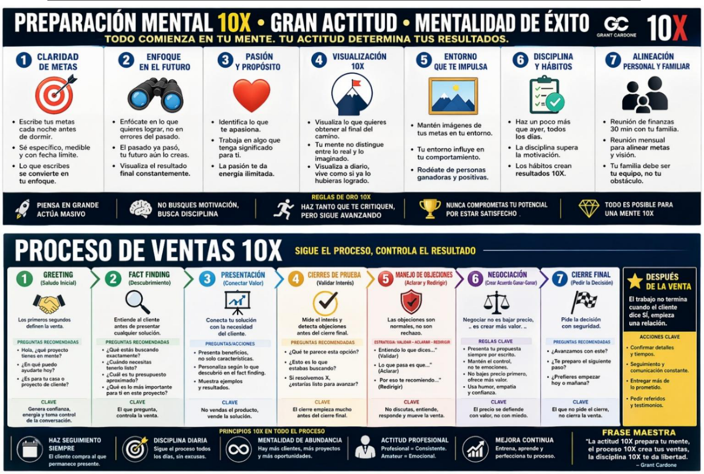
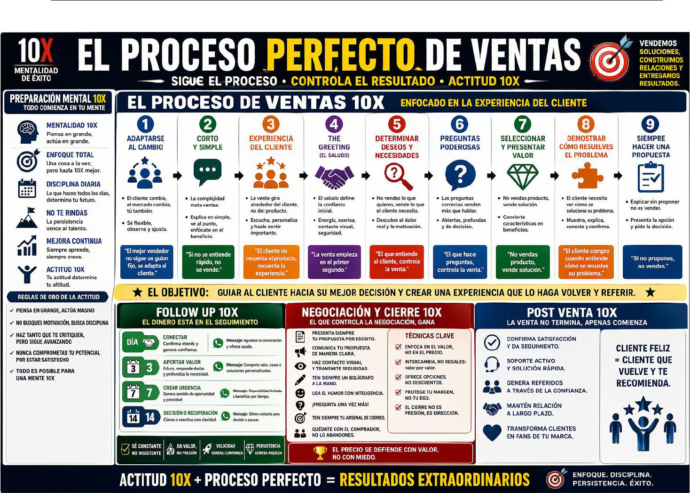
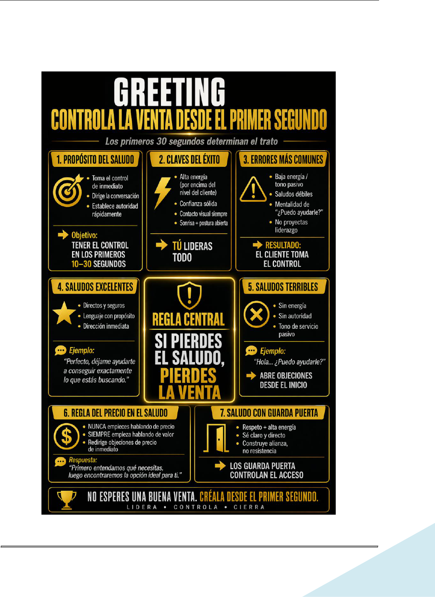
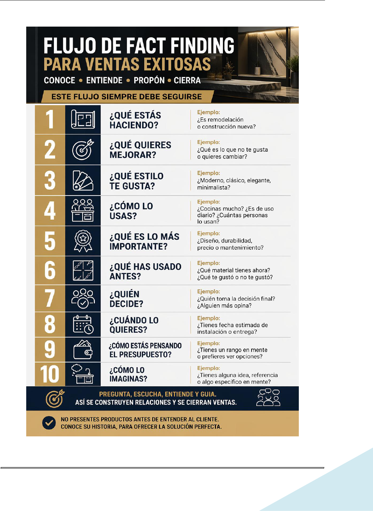
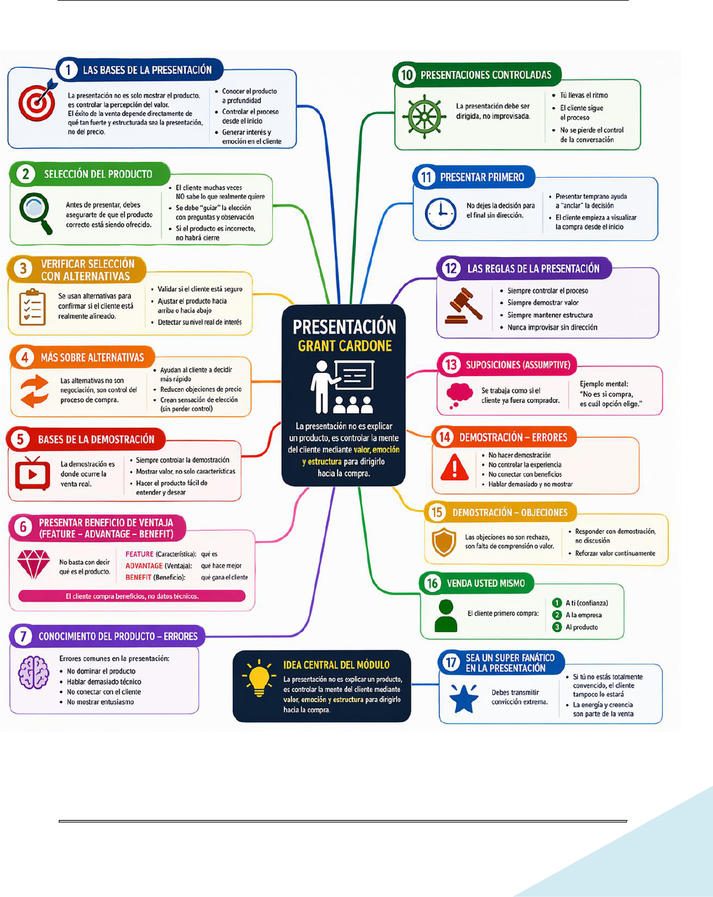
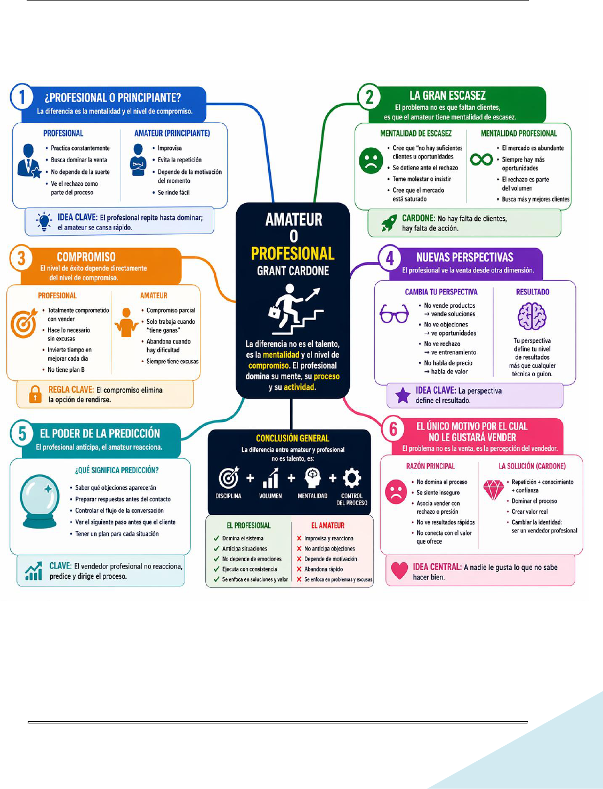
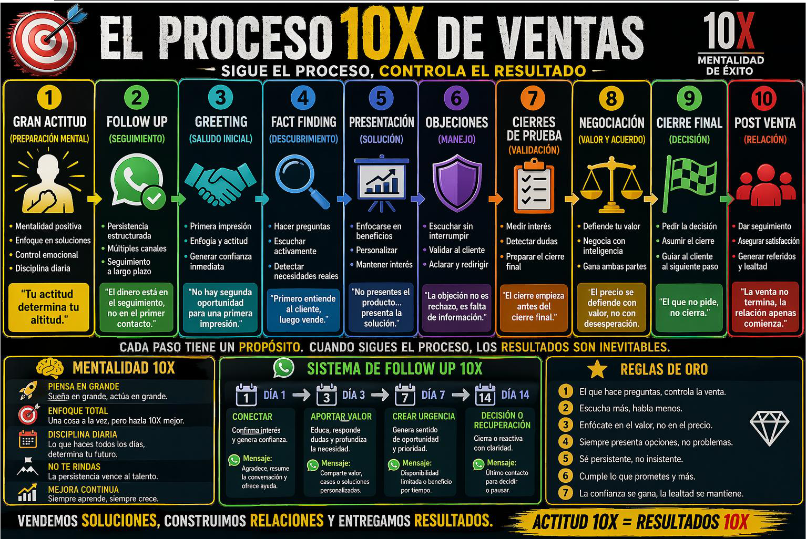

GUIA ESTRATEGICA DE VENTAS Y CRECIMIENTO EMPRESARIAL
Page 1 of 120

GUIA ESTRATEGICA DE VENTAS Y CRECIMIENTO EMPRESARIAL
Page 2 of 120
GUÍA ESTRATÉGICA DE VENTAS Y CRECIMIENTO EMPRESARIAL
TEMA I : LA IMPORTANCIA DE UNA GRAN ACTITUD ............................................................................4
TEMA II : METAS 10X FOLLOW THROUGH ......................................................................................... 20
TEMA III: FOLLOW UP AND TIME MANAGEMENT (FOLLOW UP 1) ...................................................... 32
TEMA IV: FOLLOW UP 2 .................................................................................................................... 41
TEMA V: THE PERFECT SALES PROCESS ............................................................................................. 47
TEMA VI : GREETING ........................................................................................................................ 55
TEMA VII : OBJECIONES EN EL SALUDO INICIAL ................................................................................. 59
TEMA VIII : FACT FINDING ................................................................................................................ 63
TEMA IX : RESUMEN DE VIDEOS DEL TEMA FACT-FINDING ................................................................ 66
TEMA IX : LEARN HOW TO SELL ANY CUSTOMER ............................................................................... 73
TEMA X : LA PRESENTACIÓN ............................................................................................................. 77
TEMA XI : PROFESSIONAL O AMATEUR ............................................................................................. 83
TEMA XII : CIERRES DE PRUEBA ........................................................................................................ 87
TEMA XIII : NEGOCIATION / CLOSE (PARTE 1) .................................................................................... 90
TEMA XIV : NEGOCIATION / CLOSE (PARTE 2) .................................................................................... 96
TEMA XV : PROCESO COMPLETO DE VENTAS .................................................................................... 99
TEMA XVI : EJEMPLOS PRACTICOS .................................................................................................. 104

GUIA ESTRATEGICA DE VENTAS Y CRECIMIENTO EMPRESARIAL

GUIA ESTRATEGICA DE VENTAS Y CRECIMIENTO EMPRESARIAL
Page 4 of 120
TEMA I : LA IMPORTANCIA DE UNA GRAN ACTITUD
Una gran actitud no solo mejora las ventas. Mejora el ambiente laboral, la calidad del trabajo y
la experiencia del cliente. La actitud correcta convierte empleados en profesionales y clientes en
relaciones a largo plazo.
1. Video 1: Traits of a Great Attitude – Parte 1
1.1. Tema central del video
La actitud es una decisión diaria, no algo que “simplemente se tiene”.
Grant Cardone destaca la importancia de desarrollar una actitud excepcional como base para el
éxito personal y profesional. Una gran actitud no es innata; es una elección consciente que se
refleja en nuestras acciones diarias.
1.2. Rasgos de actitud tratados en este video
1. Asumir responsabilidad total
o No culpar a otros ni a las circunstancias externas.
o Reconocer que somos los arquitectos de nuestros resultados.
2. Persistencia hasta lograr el éxito
o La determinación y la constancia superan al talento cuando se trata de alcanzar
metas.
o Nunca rendirse ante los desafíos.
1.3. Mensaje clave de Grant Cardone
"Una gran actitud vale más que un gran producto. Las personas compran experiencias
positivas, no solo productos."
Cardone enfatiza que una actitud positiva y proactiva es más valiosa que cualquier habilidad
técnica o producto que se ofrezca. Es la actitud la que atrae oportunidades y construye
relaciones sólidas.
Tu actitud no depende del cliente, del tráfico ni del jefe. Depende de ti. Los profesionales no
“reaccionan”, responden con control.
1.4. Como aplicarlo en cada Area
Ventas:

GUIA ESTRATEGICA DE VENTAS Y CRECIMIENTO EMPRESARIAL
Page 5 of 120
• Si el cliente está difícil, no dices “qué cliente tan complicado”, sino:
“¿Qué puedo
hacer diferente para manejar esta situación?”
Administración:
• Cuando hay errores en órdenes o papeles, evitar el “no fue mi culpa” y pasar a “lo
corrijo y evito que pase otra vez”.
Taller:
• Si llega un material mal cortado o una medida dudosa: no quejarse primero, sino
buscar solución y avisar con propuesta.
1.5. Test (ejemplo)
• ¿De quién es la responsabilidad de tu actitud diaria?
• ¿Un problema es para quejarse o para resolver?
1.6. Frase motivacional
"Llega temprano, busca soluciones y nunca te rindas. Tu actitud define tu éxito."
2. Video 2: Traits of a Great Attitude – Parte 2
2.1. Tema central del video
Las personas con gran actitud no esperan condiciones perfectas para rendir.
Grant Cardone profundiza en la importancia de mantener una actitud positiva y proactiva en todas
las interacciones, destacando cómo esta actitud influye directamente en el éxito personal y
profesional.
2.2. Rasgos de actitud tratados en este video
1. Sonreír constantemente
o Una sonrisa genuina crea un ambiente positivo y acogedor.
o Facilita la construcción de relaciones sólidas y de confianza.
2. Ver los problemas como oportunidades
o Cada desafío es una oportunidad para aprender y crecer.
o Adoptar esta mentalidad fomenta la innovación y la resiliencia.

GUIA ESTRATEGICA DE VENTAS Y CRECIMIENTO EMPRESARIAL
Page 6 of 120
3. Hablar de manera positiva
o El lenguaje positivo influye en la percepción y actitud de los demás.
o Evitar quejas y enfocarse en soluciones fortalece el liderazgo.
4. Trabajar con un plan
o La planificación estratégica guía las acciones hacia objetivos claros.
o Permite medir el progreso y ajustar las estrategias según sea necesario.
2.3. Mensaje clave de Grant Cardone
"La actitud es una elección. Elegir ser positivo y proactivo te distingue y te lleva al éxito."
Cardone enfatiza que mantener una actitud positiva no es solo beneficioso, sino
esencial para destacar en cualquier ámbito.
2.4. Como aplicarlo en cada Area
• Ventas
o Recibir a los clientes con una sonrisa y actitud entusiasta.
o Enfocarse en cómo los productos o servicios pueden resolver las necesidades del
cliente.
• Ingeniería / Diseño
o Abordar los desafíos de diseño como oportunidades para innovar.
o Mantener una comunicación positiva con otros departamentos para facilitar la
colaboración.
• Taller
o Fomentar un ambiente de trabajo donde se valoren las soluciones y se minimicen
las quejas.
o Implementar planes de trabajo claros y medibles para el equipo.
2.5. Frase motivacional
"Sonríe, ve oportunidades en los desafíos y habla con positividad. Tu actitud define tu
camino."
3. Video 3: Traits of a Great Attitude – Parte 3 (Grant Cardone)
3.1. Idea central del video

GUIA ESTRATEGICA DE VENTAS Y CRECIMIENTO EMPRESARIAL
Page 7 of 120
Grant Cardone profundiza en cómo la actitud no solo afecta al individuo, sino a todo el
equipo, al cliente y a los resultados de la empresa. En esta parte se enfoca más en
comportamiento, disciplina y responsabilidad personal.
3.2. Rasgos de una Gran Actitud (Parte 3)
1) Llegar temprano al trabajo
• Llegar antes demuestra compromiso y profesionalismo.
• Permite prepararse mentalmente antes de iniciar la jornada.
• Refuerza la percepción de confiabilidad ante jefes y compañeros.
Mensaje de Cardone:
“La gente exitosa no llega justo a tiempo, llega antes.”
2) Salir más tarde (dar el extra)
• No se trata de trabajar por trabajar, sino de cerrar bien el día.
• Revisar pendientes, organizar tareas y dejar el área lista para mañana.
• Refuerza la mentalidad de excelencia y responsabilidad.
3) Tomar responsabilidad personal (no culpar a otros)
• Evitar excusas y evitar señalar culpables.
• Asumir errores como oportunidades de mejora.
• Preguntarse: “¿Qué pude haber hecho mejor?” en lugar de “¿Quién falló?”
4) Enfocarse en soluciones, no en problemas
• No quejarse: proponer alternativas.
• Cada problema debe venir con al menos una posible solución.
• Esto genera liderazgo incluso en niveles operativos.
5) Tener una mentalidad de servicio
• Ver el trabajo como una oportunidad de servir al cliente y al equipo.
• Pensar: “¿Cómo puedo ayudar más?” en lugar de “¿Qué me toca hacer?”
3.3. Mensaje clave del video
“Tu actitud determina tu futuro más que tu talento o tu habilidad técnica.”
Cardone insiste en que una gran actitud compensa falta de experiencia, mientras que
una mala actitud arruina incluso el mayor talento.

GUIA ESTRATEGICA DE VENTAS Y CRECIMIENTO EMPRESARIAL
Page 8 of 120
3.4. Como aplicarlo en cada Area
Ventas
• Llegar temprano preparado para recibir clientes.
• Cerrar el día con seguimiento de cotizaciones pendientes.
• Nunca culpar a Ingeniería o Producción por retrasos; buscar soluciones.
Ingeniería
• Planificar con anticipación.
• Asumir errores de cálculo sin excusas y corregirlos rápidamente.
• Buscar alternativas cuando haya problemas de materiales.
Taller
• Preparar herramientas antes de iniciar turno.
• Dejar máquinas limpias y listas al finalizar el día.
• Si hay un problema en la máquina, proponer soluciones en lugar de solo reportar
fallas.
3.5. Frase motivacional
“Llega temprano. Da el extra. Asume responsabilidad. Enfócate en soluciones.”
4. Video 4: Traits of a Great Attitude – Parte 4 (Grant Cardone)
4.1. Idea central del video
En esta parte, Grant Cardone enfatiza que la actitud no es algo “ocasional”, sino un hábito
diario que se construye con disciplina, consistencia y mentalidad de crecimiento. La gran
actitud se demuestra en acciones, no solo en palabras.
4.2. Rasgos de una Gran Actitud (Parte 4)
1) Ser consistente con tu actitud
• No basta con tener buena actitud “algunos días”.
• La actitud debe ser estable independientemente de cómo te sientas.
• La gente confía en quienes son predecibles y positivos.
Mensaje implícito de Cardone:
La inconsistencia destruye credibilidad.

GUIA ESTRATEGICA DE VENTAS Y CRECIMIENTO EMPRESARIAL
Page 9 of 120
2) No permitir que las circunstancias controlen tu actitud
• No dejar que problemas personales, cansancio o estrés afecten tu
desempeño.
• Elegir conscientemente una actitud positiva cada día.
• Recordar:
“No controlo todo lo que pasa, pero sí cómo reacciono.”
3) Mantener la energía alta
• La energía es contagiosa: positiva o negativa.
• Hablar con entusiasmo, moverte con propósito y mostrar interés real.
• En ventas y servicio al cliente, la energía puede ser más importante que el
producto.
4) Tener mentalidad de crecimiento
• Creer que siempre puedes mejorar.
• Buscar feedback y aprendizaje constante.
• Ver los errores como parte del proceso, no como fracasos.
5) Ser agradecido
• Valorar el trabajo, los clientes y las oportunidades.
• La gratitud reduce la queja y aumenta la motivación.
• Un equipo agradecido trabaja mejor y con menos conflicto.
4.3. Mensaje clave del video
“Tu actitud no es un evento, es un estilo de vida profesional.”
Cardone refuerza que el éxito sostenible depende más de la actitud diaria que de
habilidades puntuales.
4.4. Como aplicarlo en cada Area
Ventas
• Mantener entusiasmo incluso con clientes difíciles.
• No bajar la energía después de un “no”.
• Agradecer siempre al cliente por su tiempo.
Ingeniería

GUIA ESTRATEGICA DE VENTAS Y CRECIMIENTO EMPRESARIAL
Page 10 of 120
• No frustrarse ante cambios de diseño; verlos como mejora.
• Pedir retroalimentación y aprender de proyectos anteriores.
Producción
• Mantener buen ánimo, aunque haya presión por tiempos de entrega.
• Celebrar pequeños logros del equipo.
• Agradecer y reconocer el trabajo bien hecho.
4.5. Frase motivacional
“Tu actitud es tu marca personal: sé consistente, energético y agradecido.”
5. Video 5: A Great Attitude Is Worth More than a Great Product
5.1. Idea central del video
Grant Cardone sostiene que la actitud del equipo pesa más que la calidad del
producto o servicio. Un gran producto con mala actitud fracasa; un buen producto con
gran actitud puede ganar. La actitud define la experiencia del cliente y, por ende, los
resultados del negocio.
5.2. Ideas y rasgos clave del video
1) La experiencia supera al producto
• El cliente no solo compra “lo que vendes”, compra cómo lo vendes y cómo lo tratas.
• Una actitud negativa puede arruinar incluso el mejor producto.
• Una actitud positiva puede salvar situaciones donde el producto o proceso tuvo fallas.
2) La actitud construye confianza
• Clientes confían más en personas con actitud positiva y segura.
• La confianza acelera decisiones de compra y reduce conflictos.
• La mala actitud genera dudas, quejas y reclamaciones.
3) El cliente recuerda cómo lo hiciste sentir
• Muchas veces el cliente olvida detalles técnicos, pero recuerda el trato recibido.
• La actitud amable, paciente y servicial deja una impresión duradera.
• Esto impacta en recomendaciones y ventas futuras.

GUIA ESTRATEGICA DE VENTAS Y CRECIMIENTO EMPRESARIAL
Page 11 of 120
4) La actitud del equipo impacta la reputación de la empresa
• Un solo empleado con mala actitud puede afectar la percepción de toda la compañía.
• La coherencia de actitud en ventas, ingeniería y producción es clave.
• La empresa “se ve” a través de su gente.
5) La actitud compensa problemas operativos
• Retrasos, errores o cambios pueden ser aceptados si la actitud es correcta.
• Una actitud responsable y proactiva reduce conflictos y mejora soluciones.
5.3. Mensaje clave del video
“Tu actitud es tu producto real ante el cliente.”
Cardone deja claro que la actitud no es un complemento del trabajo: es parte central
del negocio.
5.4. Como aplicarlo en cada Area
Ventas
• Priorizar trato, claridad y entusiasmo por encima de “presionar la venta”.
• Manejar objeciones con calma y respeto.
• Agradecer siempre al cliente, incluso si no compra.
Ingeniería
• Comunicar cambios o problemas con tono constructivo, no defensivo.
• Enfocarse en soluciones y no en excusas técnicas.
Taller
• Mantener actitud profesional incluso bajo presión.
• Informar problemas sin quejas, proponiendo alternativas.
• Recordar que su trabajo impacta directamente la satisfacción del cliente.
5.5. Frase motivacional
“Tu actitud vale más que tu producto.”

GUIA ESTRATEGICA DE VENTAS Y CRECIMIENTO EMPRESARIAL
Page 12 of 120
6. Video 6: “Treat Them Like Millionaires” (Trátalos como Millonarios – Grant
Cardone)
6.1. Idea central del video
Grant Cardone plantea que debes tratar a todo cliente como si fuera un cliente
premium, independientemente de su apariencia, tamaño del proyecto o presupuesto
inicial. La forma en que tratas a las personas define tu reputación, tu nivel profesional y,
finalmente, tus resultados.
6.2. Ideas y rasgos clave del video
1) Trata a todos con máximo respeto
• Nunca juzgar al cliente por su apariencia, forma de hablar o presupuesto
aparente.
• Un cliente “pequeño” hoy puede ser un gran cliente mañana.
• El respeto genera confianza y lealtad.
2) Servicio de alto nivel siempre
• La calidad del trato no depende del tamaño de la venta.
• Responde con rapidez, cortesía y profesionalismo en todo momento.
• La experiencia del cliente debe sentirse “de primera clase”.
3) Asume que cada persona es importante
• Cada cliente merece tu atención completa cuando estás con él.
• Evita distracciones, interrupciones o trato superficial.
• Haz sentir al cliente escuchado y valorado.
4) La actitud comunica valor
• Hablar con seguridad, amabilidad y entusiasmo transmite profesionalismo.
• Tu lenguaje corporal, tono de voz y disposición importan tanto como lo que
dices.
• Un trato excelente eleva el valor percibido de tu trabajo y tu empresa.
5) El trato correcto reduce conflictos
• Muchos problemas se evitan simplemente con buena comunicación y respeto.
• Clientes bien tratados son más comprensivos ante retrasos o errores.
• El buen trato facilita soluciones en lugar de confrontaciones.

GUIA ESTRATEGICA DE VENTAS Y CRECIMIENTO EMPRESARIAL
Page 13 of 120
6.3. Mensaje clave del video
“No vendas solo productos; entrega dignidad, respeto y servicio de primer nivel.”
Cardone deja claro que la forma en que tratas a las personas es tu verdadera
ventaja competitiva.
6.1. Como aplicarlo en cada Area
Ventas
• Recibir a todos los clientes con la misma cortesía, sin importar su proyecto.
• Explicar con paciencia, sin hacer sentir al cliente “ignorante” o “molesto”.
• Dar seguimiento oportuno y profesional.
• Mismo nivel de atención para un proyecto pequeño que para uno grande.
Ingeniería
• Tratar las consultas del cliente y del vendedor con seriedad y respeto.
• Evitar respuestas cortantes o técnicas sin explicación.
Producción / Carpintería
• Recordar que cada pieza que fabrican es importante para alguien.
• Cuidar detalles y calidad como si fuera para un “cliente millonario”.
• Mantener comunicación respetuosa con otras áreas.
“Trata a todos como si fueran millonarios.”
7. Video 7: Your Mental Disposition (Tu disposición mental)
7.1. Idea central del video
Tu actitud y resultados comienzan en tu mente antes de que empiece el día. La forma
en que “te programas” mentalmente determina tu desempeño.
7.2. Ideas y rasgos clave del video
• Tu mente dirige tus acciones.
• Debes elegir conscientemente una mentalidad de ganador.
• Evitar pensamientos negativos antes y durante el trabajo.
• La disciplina mental es tan importante como la disciplina técnica.
• La mentalidad correcta te hace más resiliente ante rechazos y problemas.

GUIA ESTRATEGICA DE VENTAS Y CRECIMIENTO EMPRESARIAL
Page 14 of 120
7.3. Como aplicarlo en cada Area
• Llegar al trabajo con mentalidad de servicio y solución.
• Evitar chismes, quejas y conversaciones negativas.
• Reemplazar “esto es difícil” por “¿cómo lo resuelvo?”
7.4. Frase motivacional
“Primero ganas en tu mente, luego ganas en la realidad.”
No llevar problemas personales a la atención del cliente ni al trabajo en equipo.
8. Video 8: Get Up Early (Levantarse temprano)
8.1. Idea central del video
El éxito comienza antes que los demás.
8.2. Ideas clave
• Levantarse temprano te da ventaja mental y emocional.
• Permite planificar el día con calma.
• Reduce el estrés y la improvisación.
• Los ganadores controlan su mañana; los perdedores reaccionan a ella.
8.3. Como aplicarlo en cada Area
• Preparar el día antes de llegar al trabajo.
• Revisar objetivos, tareas y prioridades.
• Llegar con energía y enfoque.
8.4. Frase motivacional
“Quien domina la mañana, domina el día.”
Llegar con tiempo = menos errores, mejor actitud, más control.
9. Video 9: Create Daily Rituals That Put You in Charge (Crea rituales diarios que te
pongan a cargo)
9.1. Idea central del video

GUIA ESTRATEGICA DE VENTAS Y CRECIMIENTO EMPRESARIAL
Page 15 of 120
Los rituales crean disciplina y control personal. Rutinas diarias crean estabilidad mental y
rendimiento.
9.2. Ideas clave
• El éxito es el resultado de hábitos, no de motivación.
• Ritual de preparación antes de trabajar.
• Rutinas claras para comenzar y cerrar el día.
• La repetición crea excelencia.
9.3. Rasgos
• Consistencia
• Autodirección
• Preparación mental
9.4. Ejemplos de rituales sugeridos
• Llegar 10–15 min antes.
• Revisar metas del día.
• Visualizar resultados positivos.
• Cerrar el día con lista de pendientes para mañana
9.5. Aplicación
• Checklist diario,
• Prioridades Claras,
• Revisión de Agenda.
9.6. Frase clave
“Tus hábitos crean tu destino.” Si no controlas tu mañana, el día te controla a ti.
10. Video 10: Start Your Day with Training and Role Play (Empieza el día con
entrenamiento y role play)
10.1. Idea central del video
La práctica diaria crea maestría.
10.2. Ideas clave

GUIA ESTRATEGICA DE VENTAS Y CRECIMIENTO EMPRESARIAL
Page 16 of 120
• Entrenar todos los días, aunque sea breve.
• Simular situaciones con clientes (role play).
• Practicar objeciones, respuestas y comunicación.
• La confianza viene de la preparación, no de la improvisación.
10.3. Cómo aplicarlo, en entrenamiento en Ventas / Administración / Taller
Ventas:
• 10–15 min de entrenamiento diario en ventas o servicio.
• Role play entre vendedores y supervisores.
• Simulación de quejas o problemas con clientes.
Admin: simulación de llamadas difíciles.
Taller: repasar procesos y estándares.
10.4. Frase clave
“No practicas hasta hacerlo bien; practicas hasta no poder hacerlo mal.”
10.5. Test
• ¿Quién entrena más: el amateur o el profesional?
11. Video 11: Level of Service (Nivel de Servicio)
11.1. Idea central del video
El nivel de servicio define tu reputación y tus ventas.
El nivel de servicio te diferencia de la competencia. El cliente paga mas por un gran
servicio que por un gran producto. Todo producto puede ser superado y vendido a un
precio menor. El producto no se vende solo, el que vende es el servicio y el servicio
necesita de una persona que este detrás.
Los problemas son oportunidades para acercarte al cliente para establecer una
relacion con él al resolverlos.

GUIA ESTRATEGICA DE VENTAS Y CRECIMIENTO EMPRESARIAL
Page 17 of 120
11.2. Ideas clave
• Servicio excepcional = ventaja competitiva.
• Cada interacción con el cliente importa.
• El servicio debe ser proactivo, no reactivo.
• Un gran servicio genera recomendaciones y lealtad.
11.3. Como aplicarlo en cada Area
• Responder rápido correos y llamadas.
• Ser amable incluso con clientes difíciles.
• Cumplir promesas y tiempos.
• Llamar después de la entrega, confirmar satisfacción
11.4. Frase clave
El servicio es lo que el cliente recuerda más. Dar opciones, contactar al cliente de nuevo
sin posponerlo nos diferencia del 99%, contactarlo con urgencia, intencion e interes eso
es Servicio.
“Tu nivel de servicio es tu verdadera marca.”
12. Video 12: The Magic of Give, Give, Give (La magia de dar, dar, dar)
12.1. Idea central del video
Dar primero crea confianza y abundancia. Dar más valor del esperado genera lealtad. No te
puedes concentrarte demasiado en las comisiones y en lo que conseguiras del acuerdo.
Debes enfocarte en lo que das y no en lo que obtienes.
El cliente sabe que le cobraras por el servicio, pero centra tu atencion en el cliente no en el
dinero.
La grandeza profesional en las ventas no esta solo en cerrar el trato, sino en encender el
deseo del cliente.
12.2. Ideas clave
• Ofrecer valor antes de pedir algo a cambio.
• Ayudar al cliente, aunque no haya venta inmediata.
• Dar información, asesoría y apoyo.

GUIA ESTRATEGICA DE VENTAS Y CRECIMIENTO EMPRESARIAL
Page 18 of 120
• La generosidad vuelve en forma de oportunidades.
12.3. Como aplicarlo en cada Area
• Dar recomendaciones honestas.
• Ayudar al cliente a tomar buenas decisiones.
• Compartir conocimiento con el equipo.
12.4. Frase clave
“Quien más da, más recibe.”
13. Video 13: Make Service Senior to Selling (Haz que el servicio sea más importante
que vender)
13.1. Idea central del video
Primero sirve, luego vende.
13.2. Ideas clave
• La venta es consecuencia de un buen servicio.
• No presionar al cliente por cerrar.
• Escuchar antes de ofrecer.
• Resolver necesidades reales, no solo vender productos.
13.3. Como aplicarlo en cada Area
• Preguntar: “¿Cómo puedo ayudarle?” antes de vender.
• Priorizar satisfacción del cliente sobre comisión.
• Construir relaciones de largo plazo.
13.4. Frase clave
Recomendar lo que el cliente realmente necesita, no lo más caro.
“Sirve bien y las ventas llegarán solas.”

GUIA ESTRATEGICA DE VENTAS Y CRECIMIENTO EMPRESARIAL
Page 19 of 120
14. Video 14: Great Salespeople Get Obsessed with Selling as an Art (Los grandes
vendedores se obsesionan con vender como un arte)
14.1. Idea central del video
La venta no es solo técnica: es una disciplina y un arte, que se estudia y perfecciona
14.2. Ideas clave
• Los mejores vendedores aman su oficio.
• Se entrenan constantemente.
• Perfeccionan su comunicación y persuasión.
• Ven cada interacción como una oportunidad de mejorar.
14.3. Como aplicarlo en cada Area
• Estudiar técnicas de ventas continuamente.
• Analizar cada cierre (qué salió bien, qué mejorar).
• Tratar cada cliente como una “clase práctica”.
14.4. Frase clave
“Los grandes vendedores no venden por dinero; venden por maestría.”
14.5. Test
• ¿Las ventas son talento natural o habilidad entrenable?

GUIA ESTRATEGICA DE VENTAS Y CRECIMIENTO EMPRESARIAL
Page 20 of 120
TEMA II : METAS 10X FOLLOW THROUGH
15. Tema central
El enfoque 10X no busca mejorar ligeramente el rendimiento, sino multiplicarlo exponencialmente
mediante claridad, acción masiva y mentalidad extrema.
Las metas deben ser 10 veces más grandes de lo normal y requieren acción masiva constante
para lograrse.
16. Pilar 1: Claridad, Metas y Enfoque Mental
16.1. Idea central
El éxito comienza con claridad absoluta en los objetivos y repetición constante de estos. Lo que
se piensa y se visualiza diariamente se convierte en resultados.
16.2. Estándares operativos
1. Escribir metas diariamente (mañana y noche)
• Todos los colaboradores deben definir sus objetivos.
• Reescribir metas antes de dormir.
• Mantener enfoque diario.
2. Visualización constante
• Visualizar resultados finales antes de ejecutar tareas.
• Mantener claridad mental en cada operación.
3. Enfoque en el futuro
• No utilizar el pasado como excusa.
• Tomar decisiones basadas en objetivos futuros.
4. Entorno visual de éxito
• Mantener metas visibles.
• Utilizar imágenes, indicadores o tableros.
5. Reuniones familiares y financieras

GUIA ESTRATEGICA DE VENTAS Y CRECIMIENTO EMPRESARIAL
Page 21 of 120
• Reunión semanal financiera (30 min).
• Reunión mensual de planificación personal.
6. Aplicación por área
VENTAS
• Definir metas de ventas diarias.
• Visualizar cierres.
ADMINISTRACIÓN
• Monitorear indicadores.
• Alinear equipo con objetivos.
PRODUCCIÓN
• Visualizar proyectos terminados.
• Definir metas de eficiencia.
16.3. Frase clave
"Tu enfoque diario crea tu realidad futura."
17. Pilar 2: Mentalidad 10x (Actitud y Expansión)
17.1. Idea central
El crecimiento extraordinario requiere una mentalidad extrema: hacer más, pensar más grande y
aceptar la incomodidad del éxito.
17.2. Estándares operativos
1. Obsesión con el crecimiento
• Priorizar objetivos sobre distracciones.
• Alto nivel de enfoque.
2. Mejora diaria
• Superar el rendimiento del día anterior.
• Evitar estancamiento.

GUIA ESTRATEGICA DE VENTAS Y CRECIMIENTO EMPRESARIAL
Page 22 of 120
3. Aceptar crítica
• La crítica es señal de crecimiento.
• No reducir esfuerzo para encajar.
4. Elevar estándares
• No aceptar resultados promedio.
• Buscar excelencia constante.
5. Rodearse de ganadores
• Trabajar con personas de alto rendimiento.
• Evitar mentalidad negativa.
6. No conformarse
• Nunca estar satisfecho.
• Siempre buscar más.
7. Mentalidad de posibilidad
• Ver oportunidades donde otros ven límites.
8. Ejecutar lo imposible
• Intentar proyectos grandes.
• Diferenciarse del mercado.
9. Aplicación por área
VENTAS
• Aumentar volumen de contactos.
• Buscar clientes grandes.
ADMINISTRACIÓN
• Optimizar procesos constantemente.

GUIA ESTRATEGICA DE VENTAS Y CRECIMIENTO EMPRESARIAL
Page 23 of 120
PRODUCCIÓN
• Mejorar tiempos y calidad continuamente.
17.3. Frase clave
"Haz tanto que no puedan ignorarte."
18. Pilar 3: Ejecución Masiva y Disciplina
18.1. Idea central
Las metas sin acción no generan resultados. La ejecución masiva diaria es el factor decisivo.
18.2. Estándares operativos
1. Enfoque en objetivos diarios
• Definir tareas claras cada día.
2. Priorizar lo difícil
• Ejecutar primero tareas críticas.
3. Hacer más de lo esperado
• Superar límites personales.
4. Contacto directo con clientes
• Visitas presenciales cuando sea posible.
5. Respuesta inmediata a problemas
• Contactar clientes problemáticos rápidamente.
6. Preparación extrema
• Llevar más recursos de los necesarios.

GUIA ESTRATEGICA DE VENTAS Y CRECIMIENTO EMPRESARIAL
Page 24 of 120
7. Completar tareas
• No dejar trabajos inconclusos.
8. Respuesta en redes
• Interactuar con clientes constantemente.
9. Puntualidad extrema
• Llegar temprano siempre.
10. Construcción de red de contactos
• Crear lista de contactos clave.
11. Aplicación por área
VENTAS
• Seguimiento diario.
• Cierre constante.
ADMINISTRACIÓN
• Resolver problemas rápido.
PRODUCCIÓN
• Finalizar tareas sin retrasos.
12. Frase clave
"Más acción = más resultados."
19. Reglas Generales de la Cultura 10x
• No excusas
• No mediocridad
• No retrasos
• No tareas incompletas

GUIA ESTRATEGICA DE VENTAS Y CRECIMIENTO EMPRESARIAL
Page 25 of 120
• No mentalidad negativa
20. Principios Obligatorios
1. Claridad total en metas
2. Acción masiva diaria
3. Responsabilidad personal
4. Mejora continua
5. Enfoque en soluciones
21. Frase Final Corporativa
"Piensa en grande. Actúa en grande. Vive en grande."
22. Video 1: Metas 10X & Follow Through (Grant Cardone)
22.1. Idea central del video
Grant Cardone enseña que el éxito 10X comienza con metas claras, repetidas constantemente y
reforzadas con acción diaria. No basta con escribir objetivos: hay que vivirlos, visualizarlos y
ejecutarlos con disciplina.
22.2. Principios clave del video
1. Escribir metas todos los días
• Refuerza el enfoque mental en lo que realmente importa.
• Programas tu subconsciente hacia el logro.
• Mantiene claridad y dirección constante.
Mensaje de Cardone: “Las metas no escritas son solo deseos.”
2. Reescribir metas antes de dormir
• El cerebro trabaja en ellas mientras descansas.
• Genera enfoque automático al despertar.
• Aumenta la obsesión positiva con tus objetivos.
3. Tener reuniones financieras familiares
• Alinea a todos con los objetivos económicos.

GUIA ESTRATEGICA DE VENTAS Y CRECIMIENTO EMPRESARIAL
Page 26 of 120
• Elimina estrés por dinero.
• Convierte a la familia en equipo, no en carga.
4. Identificar lo que te apasiona
• La pasión aumenta la energía y la persistencia.
• Facilita trabajar más sin agotamiento mental.
• Conecta propósito con acción.
5. Visualizar el resultado final
• Ayuda a tomar mejores decisiones en el presente.
• Reduce dudas e indecisión.
• Mantiene la motivación alta.
6. Enfocarse en el futuro, no en el pasado
• El pasado limita, el futuro impulsa.
• Evita excusas basadas en errores anteriores.
• Permite reinventarte constantemente.
7. Rodearse de imágenes de éxito
• Refuerza mentalmente tus metas.
• Te mantiene alineado visualmente con tus objetivos.
• Crea ambiente de alto rendimiento.
22.3. Mensaje clave del video
“Lo que ves, piensas y repites diariamente, lo terminas logrando.”
22.4. Como aplicarlo en cada Area
Ventas
• Escribir metas de ventas todos los días.
• Visualizar cierres antes de reuniones.
• Mantener objetivos visibles en el espacio de trabajo.
Administración
• Revisar metas financieras semanalmente.
• Alinear equipo con objetivos claros.
• Crear dashboards visibles.

GUIA ESTRATEGICA DE VENTAS Y CRECIMIENTO EMPRESARIAL
Page 27 of 120
Taller
• Visualizar proyectos terminados correctamente.
• Definir metas de eficiencia diaria.
• Tener indicadores visibles en el área de trabajo.
22.5. Frase motivacional
“Escríbelo. Visualízalo. Repítelo. Y ejecútalo sin parar.”
23. Video 2: Mentalidad 10X – Ser un Maníaco del Éxito (Grant Cardone)
23.1. Idea central del video
El éxito 10X requiere una mentalidad extrema: hacer más de lo normal, pensar en grande y estar
dispuesto a ser criticado por ir más allá que los demás.
23.2. Principios clave del video
1. Ser un maníaco en tu carrera
• Obsesión positiva con el crecimiento.
• Priorizar el trabajo sobre distracciones.
• Alto nivel de enfoque constante.
2. Hacer más que ayer
• Progreso diario constante.
• Evita la mediocridad.
• Genera ventaja acumulativa.
3. Hacer tanto que seas criticado
• El éxito genera incomodidad en otros.
• La crítica es señal de avance.
• Diferenciarse requiere incomodar.
4. Llevar todo al siguiente nivel
• No conformarse con “suficiente”.
• Mejorar cada proceso continuamente.
• Buscar excelencia, no promedio.

GUIA ESTRATEGICA DE VENTAS Y CRECIMIENTO EMPRESARIAL
Page 28 of 120
5. Rodearse de ganadores
• El entorno define resultados.
• Copias mentalidad y hábitos.
• Aumenta estándares personales.
6. Nunca comprometer tu potencial
• No bajar el nivel por comodidad.
• Evitar la autosatisfacción.
• Siempre buscar más.
7. Ver lo posible en lugar de lo imposible
• Mentalidad de expansión.
• Elimina límites mentales.
• Abre oportunidades.
8. Intentar lo que otros consideran imposible
• Innovación y crecimiento real.
• Diferenciación en el mercado.
• Resultados extraordinarios.
Mensaje de Cardone: “La gente promedio odia a los obsesionados… hasta que ven sus
resultados.”
23.3. Mensaje clave del video
“El éxito extremo requiere acciones extremas.”
23.4. Como aplicarlo en cada Area
Ventas
• Hacer más llamadas que el promedio.
• Buscar clientes que otros evitan.
• Intentar cerrar negocios grandes.
Administración
• Optimizar procesos constantemente.

GUIA ESTRATEGICA DE VENTAS Y CRECIMIENTO EMPRESARIAL
Page 29 of 120
• No aceptar resultados promedio.
• Implementar mejoras continuas.
Producción
• Mejorar tiempos y calidad cada día.
• Probar nuevas técnicas.
• Superar estándares actuales.
23.5. Frase motivacional
“Haz tanto que no puedan ignorarte.”
24. Video 3: Ejecución 10X – Disciplina y Acción Masiva (Grant Cardone)
24.1. Idea central del video
El éxito no depende solo de metas o mentalidad, sino de ejecución masiva diaria. La disciplina
en las acciones es lo que convierte ideas en resultados.
24.2. Principios clave del video
1. Enfocarse en el objetivo diario
• Divide metas grandes en acciones pequeñas.
• Mantiene claridad diaria.
• Evita distracciones.
Mensaje de Cardone: “Gana el día y ganarás tu vida.”
2. Hacer lo más difícil primero
• Elimina lo que más pesa mentalmente.
• Aumenta productividad.
• Genera impulso para el resto del día.
3. Hacer más de lo que crees posible
• Rompe límites personales.
• Aumenta capacidad real.
• Genera crecimiento acelerado.
4. Visitar clientes en persona
• Aumenta confianza.

GUIA ESTRATEGICA DE VENTAS Y CRECIMIENTO EMPRESARIAL
Page 30 of 120
• Mejora cierres.
• Diferenciación frente a competencia.
5. Llamar rápidamente a clientes problemáticos
• Evita escalamiento de problemas.
• Demuestra compromiso.
• Mejora reputación.
6. Llevar más de lo necesario
• Preparación extrema.
• Evita perder oportunidades.
• Mejora percepción profesional.
7. Terminar lo que empiezas
• Evita acumulación de tareas.
• Genera disciplina.
• Mejora resultados.
8. Responder todo en redes
• Aumenta engagement.
• Mejora relación con clientes.
• Genera oportunidades.
9. Llegar temprano
• Demuestra compromiso.
• Permite preparación.
• Da ventaja competitiva.
10. Crear lista de contactos clave
• Expande oportunidades.
• Genera crecimiento exponencial.
• Abre puertas importantes.
24.3. Mensaje clave del video
“La acción masiva es la única forma de garantizar resultados masivos.”

GUIA ESTRATEGICA DE VENTAS Y CRECIMIENTO EMPRESARIAL
Page 31 of 120
24.4. Como aplicarlo en cada Area
Ventas
• Contactar clientes diariamente sin excepción.
• Hacer seguimiento inmediato.
• Priorizar cierres difíciles.
Administración
• Resolver problemas rápido.
• No acumular tareas.
• Mantener comunicación constante.
Taller
• Completar tareas sin dejarlas a medias.
• Preparar todo antes de empezar.
• Resolver problemas en el momento.
24.5. Frase motivacional
“Más acción. Más velocidad. Más resultados.”

GUIA ESTRATEGICA DE VENTAS Y CRECIMIENTO EMPRESARIAL
Page 32 of 120
TEMA III: FOLLOW UP AND TIME MANAGEMENT (FOLLOW UP 1)
25. Tema central
El seguimiento constante, organizado y persistente es lo que realmente cierra ventas.
“Es mejor perder una venta por insistir demasiado que por no insistir lo suficiente.”
25.1. Video 1: Commitment
25.1.1. Tema central del video
El seguimiento solo funciona cuando existe un compromiso real con cerrar la venta.
No es intentar… es decidir que no vas a parar hasta obtener un resultado.
25.1.2. Puntos clave tratados en este video
1. Compromiso total con el cierre
o No abandonar después del primer intento
o Seguir hasta cerrar o descartar definitivamente
2. Disciplina en el seguimiento
o Hacer follow-up aunque no tengas ganas
o Convertirlo en hábito diario
25.1.3. Mensaje clave de Grant Cardone
“El problema no es el cliente, es la falta de compromiso del vendedor.”
El seguimiento no falla… falla la decisión de hacerlo consistentemente.
25.1.4. Como aplicarlo en cada Area
Ventas:
• No dejar clientes “en visto” → siempre programar próximo contacto
Administración:
• Dar seguimiento a cotizaciones enviadas, no solo archivarlas
25.1.5. Test (ejemplo)

GUIA ESTRATEGICA DE VENTAS Y CRECIMIENTO EMPRESARIAL
Page 33 of 120
• ¿Estás comprometido a cerrar o solo a intentar?
• ¿Cuántas veces haces seguimiento antes de rendirte?
25.1.6. Frase motivacional
“El que se compromete cierra. El que intenta, pierde.”
25.2. Video 2: CRM – Customer Relationship Management
25.2.1. Tema central del video
El CRM es la herramienta clave para no perder oportunidades de venta.
25.2.2. Puntos clave tratados en este video
1. Registrar toda la información
o Datos del cliente
o Historial de contacto
2. Programar seguimiento
o Fechas claras
o Recordatorios
25.2.3. Mensaje clave de Grant Cardone
“Lo que no se registra, se pierde.”
25.2.4. Como aplicarlo en cada Area
Ventas:
• Registrar cada cliente inmediatamente
Administración:
• Mantener orden y control de los proesos de información
25.2.5. Test (ejemplo)

GUIA ESTRATEGICA DE VENTAS Y CRECIMIENTO EMPRESARIAL
Page 34 of 120
• ¿Dónde está guardada la información de tus clientes?
• ¿Tienes seguimiento programado o dependes de memoria?
25.2.6. Frase motivacional
“Tu CRM es tu dinero organizado.”
25.3. Video 3: Organization
25.3.1. Tema central del video
Sin organización, el follow-up se vuelve inconsistente y se pierden ventas.
25.3.2. Puntos clave tratados
1. Orden en contactos
2. Prioridad en leads
3. Agenda de seguimiento
25.3.3. Mensaje clave
“El desorden cuesta dinero.”
25.3.4. Aplicación
Ventas:
• Clasificar clientes (caliente, frío, seguimiento)
Administración:
• Orden en documentos y órdenes
25.3.5. Test
• ¿Tienes tus clientes organizados o mezclados?
25.3.6. Frase
“El orden cierra ventas.”
25.4. Video 4: Scripts
25.4.1. Tema central

GUIA ESTRATEGICA DE VENTAS Y CRECIMIENTO EMPRESARIAL
Page 35 of 120
Tener guiones evita improvisar y mejora resultados.
25.4.2. Puntos clave
1. Saber qué decir
2. Mantener consistencia
3. Controlar la conversación
25.4.3. Mensaje clave
“El éxito se practica, no se improvisa.”
25.4.4. Aplicación
Ventas:
• Usar guiones para llamadas
Administración:
• Respuestas estándar a clientes
25.4.5. Test
• ¿Improvisas o tienes un proceso?
25.4.6. Frase
“Los profesionales entrenan, los amateurs improvisan.”
25.5. Video 5: Accountability
25.5.1. Tema central
Eres responsable de los resultados.
25.5.2. Puntos clave
1. No culpar
2. Asumir resultados
3. Mejorar constantemente
25.5.3. Mensaje clave

GUIA ESTRATEGICA DE VENTAS Y CRECIMIENTO EMPRESARIAL
Page 36 of 120
“Si no cerraste, algo te faltó hacer.”
25.5.4. Aplicación
Ventas:
• No culpar precio o cliente
Administración:
• Corregir errores rápido
25.5.5. Test
• ¿A quién culpas cuando algo falla?
25.5.6. Frase
“La responsabilidad genera resultados.”
25.6. Video 6: Unreasonable Attitude
25.6.1. Tema central
Ser persistente más allá de lo normal.
25.6.2. Puntos clave
1. No rendirse
2. Insistir más que otros
3. Buscar alternativas
25.6.3. Mensaje clave
“Lo normal no cierra ventas.”
25.6.4. Aplicación
Ventas:
• Contactar múltiples veces
Administración:
• Reconfirmar procesos

GUIA ESTRATEGICA DE VENTAS Y CRECIMIENTO EMPRESARIAL
Page 37 of 120
Taller:
• Buscar soluciones
25.6.5. Test
• ¿Te rindes rápido?
25.6.6. Frase
“El éxito es para los que insisten.”
25.7. Video 7: The Importance of Follow-Up
25.7.1. Tema central
El follow-up es donde ocurre la mayoría de las ventas.
25.7.2. Puntos clave
1. La mayoría no hace seguimiento
2. Las ventas requieren múltiples contactos
25.7.3. Mensaje clave
“El dinero está en el seguimiento.”
25.7.4. Aplicación
Ventas:
• No depender del primer contacto
Administración:
• Dar seguimiento a cotizaciones
25.7.5. Test
• ¿Cuántas veces haces seguimiento?
25.7.6. Frase
“La venta empieza después del primer ‘no’.”

GUIA ESTRATEGICA DE VENTAS Y CRECIMIENTO EMPRESARIAL
Page 38 of 120
25.8. Video 8: Follow-Up Definition
25.8.1. Tema central
Follow-up = persistencia hasta obtener resultado.
25.8.2. Puntos clave
1. No es una sola llamada
2. Es un proceso continuo
25.8.3. Mensaje clave
“El seguimiento termina cuando hay un resultado.”
25.8.4. Aplicación
Ventas:
• Sistema de contactos
Administración:
• Control de procesos
25.8.5. Test
• ¿Cuándo dejas de hacer seguimiento?
25.8.6. Frase
“El follow-up separa a los vendedores promedio de los profesionales.”
25.9. Video 9: B2B Leads Not Sales Ready
25.9.1. Tema central
Muchos leads no están listos para comprar.
25.9.2. Puntos clave

GUIA ESTRATEGICA DE VENTAS Y CRECIMIENTO EMPRESARIAL
Page 39 of 120
1. Necesitan tiempo
2. Requieren educación
25.9.3. Mensaje clave
“No todos compran hoy, pero pueden comprar después.”
25.9.4. Aplicación
Ventas:
• Nutrir clientes
Administración:
• Mantener indicadores de eficacia en control de contacto
25.9.5. Test
• ¿Descartas leads rápido?
25.9.6. Frase
“Un no hoy puede ser un sí mañana.”

GUIA ESTRATEGICA DE VENTAS Y CRECIMIENTO EMPRESARIAL
Page 40 of 120
25.10. Video 10: Why Leads Do Not Convert
25.10.1. Tema central
Los leads no compran por múltiples razones, no solo por falta de interés.
25.10.2. Puntos clave
1. Tiempo
2. Dinero
3. Falta de urgencia
4. Desconfianza
25.10.3. Mensaje clave
“El problema no es el lead, es el proceso.”
25.10.4. Test
• ¿Sabes por qué tus clientes no compran?
25.10.5. Frase
“Cada ‘no’ es una oportunidad mal gestionada.”

GUIA ESTRATEGICA DE VENTAS Y CRECIMIENTO EMPRESARIAL
Page 41 of 120
TEMA IV: FOLLOW UP 2
26. Tema central
El seguimiento no es un evento, es un sistema estratégico. Las ventas efectivas y consistentes
ocurren porque el vendedor permanece presente en la mente del cliente durante todo el proceso
de decisión.
El seguimiento avanzado requiere estrategia, frecuencia y múltiples canales.
27. Desarrollo conceptual
El 80% de las ventas ocurre después del quinto contacto, pero la mayoría de los vendedores
abandona antes del tercero. El seguimiento profesional elimina la dependencia de la “suerte” y la
reemplaza por un sistema predecible.
28. Puntos clave
1. Persistencia estructurada
• Definir secuencias claras (día 1, 3, 7, 14, 30).
• No depender de memoria o improvisación.
• Cada contacto debe tener un objetivo.
2. Multicanalidad (Uso de llamadas, mensajes, emails)
• Llamadas: generan conexión directa.
• Mensajes: mantienen presencia rápida.
• Email: refuerza información formal.
3. Seguimiento a largo plazo
• Algunos clientes compran meses después.
• Mantener contacto periódico sin presión.
29. Mensaje clave
“El seguimiento no es insistir… es no desaparecer.”

GUIA ESTRATEGICA DE VENTAS Y CRECIMIENTO EMPRESARIAL
Page 42 of 120
30. Aplicación por área
Ventas:
• Implementar CRM o sistema de seguimiento.
o Crear secuencia de seguimiento (día 1, 3, 7, 14…)
• Nunca perder el contacto con un lead.
Administración:
• Controlar recordatorios
• Controlar pipeline.
31. Test
• ¿Tienes un sistema o improvisas?
32. Frase
“El cliente compra al que permanece presente.”
33. Sistema de Nutrición de Leads, Conversión y Dominio del Seguimiento
33.1. Idea Central Del Módulo
El Follow Up no es insistencia, es estrategia de conversión a largo plazo.
Las ventas no se pierden por precio ni producto, sino por falta de seguimiento estructurado.
Regla clave: “El dinero está en el seguimiento, no en el primer contacto.”
33.2. Nutrición de Leads (The Importance Of Nurturing Leads)
Concepto
Un lead no compra inmediatamente — necesita ser educado, nutrido y acompañado.
Estrategia
• Educar al cliente antes de venderle.
• Generar confianza progresiva
• Mantener presencia constante sin presión
Aplicación

GUIA ESTRATEGICA DE VENTAS Y CRECIMIENTO EMPRESARIAL
Page 43 of 120
• Mensajes de valor, no solo cotizaciones
• Seguimiento con información útil
• Construcción de relación, no solo transacción
34. Generación y Conversión de Leads
Concepto (Lift Your Lead Generation)
No se trata solo de tener más leads, sino de convertir mejor los existentes, en ventas.
Estrategia
• Mejorar tasa de conversión antes de buscar volumen
• Optimizar seguimiento existente
• Reducir pérdida de oportunidades
35. Dominio de Conversión (500% Increase in Conversion)
Concepto
Pequeñas mejoras en seguimiento generan aumentos masivos en ingresos.
Estrategia clave
• Responder más rápido
• Seguir más veces
• Personalizar contacto
El seguimiento eficiente multiplica resultados sin aumentar leads.
36. Velocidad De Seguimiento (Be The First To Follow Up)
Concepto
El primero en hacer seguimiento tiene ventaja psicológica.
Estrategia
• Responder en minutos, no días
• Ser el primero en retomar contacto
• Generar percepción de prioridad
Velocidad = confianza

GUIA ESTRATEGICA DE VENTAS Y CRECIMIENTO EMPRESARIAL
Page 44 of 120
37. Regla del “Always” (The Always Rule)
Concepto
El seguimiento no es opcional, es obligatorio.
Reglas
• Siempre hacer seguimiento
• Siempre responder
• Siempre mantener contacto
No existe “cliente perdido”, existe “cliente sin seguimiento”
38. Errores Críticos (Don’t Be That Guy)
Comportamientos que destruyen ventas
• Desaparecer después del primer contacto
• No dar seguimiento constante
• Ser agresivo sin valor
• Solo contactar para vender
Resultado: pérdida de confianza
39. Industria Trillonaria (Trillion Dollar Industry)
Concepto
El seguimiento es la base de industrias multimillonarias.
Estrategia
• Persistencia inteligente
• Relación a largo plazo
• Construcción de cartera de clientes
Los grandes ingresos vienen del seguimiento acumulado
40. Top 1% de Ingresos
Concepto
El top 1% no vende más — da seguimiento mejor y más constante

GUIA ESTRATEGICA DE VENTAS Y CRECIMIENTO EMPRESARIAL
Page 45 of 120
Diferencia clave
• Promedio: abandona después de 1–2 intentos
• Top 1%: sigue hasta cerrar o descartar formalmente
41. Conversión de Leads (40% More Leads Conversion)
Estrategia
• Seguimiento estructurado aumenta conversiones sin más publicidad
• Consistencia genera resultados exponenciales
42. Herramienta más Poderosa (Most Powerful Follow Up Tool)
Concepto
La herramienta más poderosa no es tecnología — es consistencia humana
Aplicación
• CRM o lista organizada
• Secuencias programadas
• Registro de cada contacto
43. Orphan Owners (Clientes Abandonados)
Concepto
Clientes que nadie sigue después del primer contacto o venta.
Estrategia
• Recuperar leads olvidados
• Reactivar conversaciones viejas
• Dar seguimiento a cotizaciones perdidas
Aquí está dinero oculto
44. After the Sale (Después de la Venta)
Concepto
El seguimiento NO termina con la venta.
Estrategia

GUIA ESTRATEGICA DE VENTAS Y CRECIMIENTO EMPRESARIAL
Page 46 of 120
• Confirmación post venta
• Soporte activo
• Generación de referidos
La venta es el inicio de la relación
45. Do the Math (Haz los Números)
Concepto
El seguimiento es matemático, no emocional.
Ejemplo lógico
• 100 leads
• 10% sin seguimiento = pérdida directa
• 30–50% mejora con follow up estructurado
El dinero perdido es medible
46. Sistema Operativo de Follow Up (Resumen Ejecutivo)
Flujo recomendado
1. Contacto inicial
2. Seguimiento 24h
3. Seguimiento 3 días
4. Seguimiento 7 días
5. Seguimiento 14 días
6. Seguimiento mensual
47. Frase Maestra Del Módulo
“El follow up no es insistir… es construir presencia hasta que el cliente esté listo.”
48. Resumen Final
• Follow up = sistema, no acción aislada
• La velocidad gana confianza
• La constancia gana dinero
• El abandono pierde ventas
• El seguimiento crea riqueza

GUIA ESTRATEGICA DE VENTAS Y CRECIMIENTO EMPRESARIAL
Page 47 of 120
TEMA V: THE PERFECT SALES PROCESS
49. Tema central
Las ventas siguen un proceso estructurado, no son improvisadas.
49.1. Puntos clave
1. Etapas claras
o Greeting → Fact Finding → Presentación → Cierre
2. Control del proceso
o El vendedor guía, no el cliente
49.2. Mensaje clave
“Sin proceso, no hay consistencia.”
49.3. Aplicación
Ventas:
• Seguir pasos siempre
Administración:
• Flujo ordenado de clientes
49.4. Test
• ¿Sigues un proceso o improvisas?
49.5. Frase
“El proceso cierra ventas, no la suerte.”

GUIA ESTRATEGICA DE VENTAS Y CRECIMIENTO EMPRESARIAL
Page 48 of 120
50. Sistema de Ventas Centrado en el Cliente (Customer Experience Driven)
50.1. Adapt To Change (Adaptarse Al Cambio)
Idea central
El vendedor moderno no vende igual siempre: se adapta al cliente, al contexto y al momento.
Concepto clave
El cliente ha cambiado:
• Más informado
• Más impaciente
• Más comparativo
El vendedor que no se adapta pierde.
Aplicación práctica
• Cambiar tono según cliente
• Ajustar velocidad de explicación
• Adaptar propuesta según necesidad
Frase clave
“El mejor vendedor no sigue un guion fijo, se adapta al cliente.”
50.2. Short And Simple (Corto y Simple)
Idea central
La complejidad mata ventas.
Concepto clave
El cliente no quiere explicaciones largas, quiere:
• Claridad
• Rapidez
• Seguridad
Aplicación práctica

GUIA ESTRATEGICA DE VENTAS Y CRECIMIENTO EMPRESARIAL
Page 49 of 120
• Explicar en frases simples
• Evitar tecnicismos
• Ir directo al beneficio
Error común
Hablar demasiado técnico o largo
Frase clave
“Si no se entiende rápido, no se vende.”
50.3. Built Around Customer Experience (Experiencia del Cliente)
Idea central
La venta no gira alrededor del producto, gira alrededor del cliente.
Concepto clave
El cliente no compra lo que haces, compra cómo lo haces sentir.
Aplicación práctica
• Escuchar antes de hablar
• Personalizar solución
• Hacer sentir prioridad al cliente
Frase clave
“El cliente no recuerda el producto, recuerda la experiencia.”
50.4. The Greeting (El Saludo)
Idea central
El saludo define la confianza inicial.
Concepto clave
En segundos el cliente decide si confiar o desconfiar.
Aplicación práctica

GUIA ESTRATEGICA DE VENTAS Y CRECIMIENTO EMPRESARIAL
Page 50 of 120
• Energía positiva
• Contacto visual
• Seguridad al hablar
Ejemplo
“Hola, bienvenido, Gracias por Visitar Artemisa Marble, mi nombre es X, ¿y el suyo?”
Frase clave
“La venta empieza con el primer contacto visual.”
50.5. Determining Wants and Needs (Identificar Deseos y Necesidades)
Idea central
No vendes lo que quieres, vendes lo que el cliente necesita.
Concepto clave
El cliente muchas veces no sabe exactamente lo que quiere.
Aplicación práctica
• Preguntar antes de ofrecer
• Detectar dolor real
• Entender motivación
Preguntas clave
• “¿Qué estás buscando lograr?”
• “¿Qué es lo más importante para ti?”
Frase clave
“El que entiende al cliente, controla la venta.”
50.6. Great Questions to Ask (Preguntas Poderosas)
Idea central
Las preguntas correctas venden más que la explicación.

GUIA ESTRATEGICA DE VENTAS Y CRECIMIENTO EMPRESARIAL
Page 51 of 120
Concepto clave
El vendedor profesional es un experto en preguntar, no en hablar.
Aplicación práctica
• Preguntas abiertas
• Preguntas de profundidad
• Preguntas de decisión
Ejemplos
• “¿Qué te gustaría mejorar?”
• “¿Qué sería ideal para ti?”
• “¿Para cuándo lo necesitas?”
Frase clave
“El que hace preguntas, controla la venta.”
50.7. Select Product & Present Value (Seleccionar Producto y Presentar Valor)
Idea central
No se vende producto, se vende valor.
Concepto clave
El producto es la solución, no el centro.
Aplicación práctica
• Elegir opción según necesidad del cliente
• Traducir características en beneficios
• Personalizar la propuesta
Ejemplo
“Esto te va a ayudar porque te reduce mantenimiento y te dura más años.”
Frase clave
“No vendas producto, vende solución.”

GUIA ESTRATEGICA DE VENTAS Y CRECIMIENTO EMPRESARIAL
Page 52 of 120
50.8. Demonstrate Solution (Demostrar Cómo Resuelve el Problema)
Idea central
El cliente necesita ver cómo se soluciona su problema.
Concepto clave
La demostración elimina dudas.
Aplicación práctica
• Mostrar antes/después
• Explicar proceso
• Conectar con problema real
Ejemplo
“Esto elimina el problema que me comentaste de desgaste y mantenimiento.”
Frase clave
“El cliente compra cuando entiende que se soluciona su problema.”
50.9. Always Make a Proposal (Siempre Hacer Propuesta)
Idea central
Sin propuesta no hay cierre.
Concepto clave
Muchos vendedores explican, pero no piden decisión.
Aplicación práctica
• Siempre presentar opción final
• Dar dirección clara
• Pedir decisión sin miedo
Ejemplos
• “¿Te gustaría avanzar con esto?”
• “¿Lo dejamos listo para comenzar?”

GUIA ESTRATEGICA DE VENTAS Y CRECIMIENTO EMPRESARIAL
Page 53 of 120
• “¿Avanzamos hoy o prefieres mañana?”
Frase clave
“Si no propones, no vendes.”
51. Resumen General Del Sistema
51.1. Proceso de Venta perfecto
1. Adaptarse al cliente
2. Mantenerlo simple
3. Enfocar en experiencia
4. Crear buen saludo
5. Descubrir necesidades
6. Hacer buenas preguntas
7. Seleccionar solución
8. Demostrar valor
9. Presentar propuesta
51.2. Frase Maestra del Sistema
“El proceso perfecto es guiar mejor al cliente hacia su decisión.”

GUIA ESTRATEGICA DE VENTAS Y CRECIMIENTO EMPRESARIAL

GUIA ESTRATEGICA DE VENTAS Y CRECIMIENTO EMPRESARIAL
Page 55 of 120
TEMA VI : GREETING
52. Tema central
Los primeros segundos definen la venta.
52.1. Puntos clave
1. Primera impresión
2. Energía y actitud
3. Generar confianza inmediata
52.2. Mensaje clave
“El cliente decide rápido si confiar en ti.”
52.3. Aplicación
Ventas:
• Saludo profesional y seguro
Administración:
• Atención clara y amable, atencion al cliente en equipo.
52.4. Test
• ¿Tu saludo genera confianza o duda?
52.5. Frase
“No hay segunda oportunidad para una primera impresión.”
53. Purpose of the Greeting
El saludo no es cortesía, es control del proceso de venta.
• Sirve para tomar liderazgo inmediato de la interacción
• Establece autoridad sin ser agresivo
• Evita que el cliente “te maneje” la conversación
Objetivo: ganar control en los primeros 10–30 segundos

GUIA ESTRATEGICA DE VENTAS Y CRECIMIENTO EMPRESARIAL
Page 56 of 120
54. Tips on the Greeting
• Energía alta (más de lo normal)
• Confianza total en tu producto
• Sonrisa + contacto visual + postura abierta
• No pedir permiso para vender, asumir la venta
El saludo debe proyectar: “sé lo que hago”
55. Biggest Mistakes in the Greeting
Errores comunes que matan la venta:
• Ser demasiado pasivo o tímido
• Hablar bajo o sin energía
• Preguntar cosas débiles (“¿te puedo ayudar?”)
• No tomar control del flujo
Resultado: el cliente toma el control
56. Great Greetings
Un buen saludo:
• Es directo y con propósito
• Da dirección inmediata
• Hace sentir al cliente que está en buenas manos
Ejemplo mental: “Te voy a ayudar a resolver esto rápidamente”
57. Terrible Greetings
• “Hola, ¿en qué puedo ayudarte?” (muy débil)
• Actitud de empleado, no de asesor
• Sin energía ni intención de cerrar
Esto abre la puerta a objeciones desde el inicio
58. Price in Greeting? – Also Figures on Yours
• No evadir el precio si el cliente lo menciona
• Pero tampoco liderar con precio

GUIA ESTRATEGICA DE VENTAS Y CRECIMIENTO EMPRESARIAL
Page 57 of 120
• Redirigir siempre al valor primero
“Antes de hablar de precio, déjame entender qué necesitas”
59. The Power Greeting for the Gatekeeper
Cuando hablas con recepcionistas o asistentes:
• Trátalos con respeto + energía alta
• Sé claro y directo
• Hazlos aliados, no obstáculos
Ellos controlan el acceso al decisor
60. Price Objection / Too Much Money (In Greeting)
Si el cliente dice “es caro” desde el inicio:
• No te defiendas
• No reduzcas precio
• Redirige a valor y necesidad
“Puede parecerlo al inicio, pero déjame mostrarte por qué los clientes lo eligen”
61. Best Price/Time I – Information Overload
• No bombardear con información al inicio
• Demasiados datos = pérdida de interés
• Primero control emocional, luego lógica
El cliente compra con emoción, no con datos
62. Best Price/Time II – Exactly What You Need
• Dar solo la información necesaria en el momento correcto
• Personalizar el mensaje
• Guiar la conversación paso a paso
“Menos información, más dirección”
63. Resumen General del Módulo Greeting
Grant Cardone enseña que el greeting es:
• Control inmediato de la conversación
• Energía alta + autoridad
• Enfoque en valor antes que precio

GUIA ESTRATEGICA DE VENTAS Y CRECIMIENTO EMPRESARIAL
Page 58 of 120
• Evitar debilidad desde el primer segundo
Regla clave:
Si pierdes el saludo, pierdes la venta.

GUIA ESTRATEGICA DE VENTAS Y CRECIMIENTO EMPRESARIAL
Page 59 of 120
TEMA VII : OBJECIONES EN EL SALUDO INICIAL
64. Tema central
Las objeciones aparecen desde el inicio y deben manejarse con control. Las objeciones no son
un problema, son señales de control perdido o falta de valor percibido desde el inicio.
Si no controlas el saludo, el cliente te controla con objeciones.
64.1. Puntos clave
1. No confrontar
2. Mantener control
3. Redirigir conversación
64.2. Mensaje clave
“La objeción no es rechazo, es falta de información.”
64.3. Aplicación
Ventas:
• Responder con seguridad
Administración:
• No escalar problemas innecesarios
64.4. Test
• ¿Reaccionas o controlas la objeción?
64.5. Frase
“El que controla la conversación, controla la venta.”
65. Objeciones en el Saludo Inicial
• El cliente ya llega con dudas o resistencia
• Puede bloquearte incluso antes de escuchar

GUIA ESTRATEGICA DE VENTAS Y CRECIMIENTO EMPRESARIAL
Page 60 of 120
Clave: No responder defensivamente, sino redireccionar y tomar control
66. Manejar Objeciones en el Saludo Inicial
• No discutir
• No justificarte
• No entrar en modo explicación larga
Respuesta tipo: “Perfecto, eso es exactamente lo que vamos a aclarar ahora mismo.”
Clave: Control + calma + dirección
67. Querer vs Preguntar
• “Quiero” = intención emocional (interés real)
• “Preguntar” = curiosidad sin compromiso
No asumas que, porque el cliente pregunta, quiere comprar.
67.1. Ejemplo simple
Cliente dice:
• “¿Cuánto cuesta esto?”
• “¿Qué incluye?”
• “¿Cómo funciona?”
Error común del vendedor:
“Ah ok, ya está interesado → voy a vender fuerte”
67.2. Lo que realmente enseña Cardone
Muchas preguntas son solo:
• curiosidad
• comparación
• exploración
• incluso resistencia disfrazada
NO significan intención de compra.
67.3. El problema del error

GUIA ESTRATEGICA DE VENTAS Y CRECIMIENTO EMPRESARIAL
Page 61 of 120
Si tú tratas cualquier pregunta como compra:
• te aceleras demasiado
• bajas precio demasiado rápido
• pierdes control emocional
• empiezas a “persuadir en vez de liderar”
67.4. Lo correcto es esto
Cuando el cliente pregunta, tú piensas:
“Esto es una señal de interés… pero no necesariamente de decisión.”
Entonces respondes con control, por ejemplo:
“Buena pregunta, te explico cómo funciona primero para que lo veas claro.”
67.5. Resumen simple
• Pregunta ≠ compra
• Pregunta = interés o curiosidad
• Compra = decisión emocional + confianza + control del vendedor
67.6. Idea clave
“No persigas preguntas… lidera la conversación detrás de ellas.”
Ejemplo:
“Solo estoy mirando”
→ No es objeción real, es exploración
68. Preguntas: ¿Intención de Compra o No?
68.1. Sí Indican Compra (Alta Intención)
• “¿Cuándo me lo pueden instalar?”
• “¿Qué opciones tengo?”
• “¿Cuál me recomiendas?”
• “¿Hay financiamiento?”
• “¿Cuánto sería el pago mensual?”
• “¿Puedo verlo en mi espacio / medidas?”
• “¿Cuánto tarda el proceso?”

GUIA ESTRATEGICA DE VENTAS Y CRECIMIENTO EMPRESARIAL
Page 62 of 120
SIGNIFICADO: el cliente ya está visualizando tenerlo
68.2. Interés, Pero No Compra (Zona Gris)
Aquí el cliente está explorando:
• “¿Qué materiales usan?”
• “¿Cómo funciona?”
• “¿Qué diferencia hay entre opciones?”
• “¿Qué incluye el servicio?”
• “¿Tienen garantía?”
SIGNIFICADO: curiosidad + evaluación, no decisión
68.3. No Es Compra (Solo Exploración O Defensa)
Estas no significan intención real:
• “¿Cuánto cuesta?”
• “Solo estoy mirando”
• “Estoy comparando”
• “Es caro?”
• “¿Tienes algo más barato?”
SIGNIFICADO: el cliente aún no confía ni está listo
69. Regla de Oro
No respondas preguntas como si fueran decisiones.
Responde preguntas como oportunidades para controlar la conversación.

GUIA ESTRATEGICA DE VENTAS Y CRECIMIENTO EMPRESARIAL
Page 63 of 120
TEMA VIII : FACT FINDING
70. Tema central – Entender – Descubrir (Pain)
Antes de vender, debes entender al cliente.
En la filosofía de ventas y negocios de Grant Cardone, el "pain", No es solo dolor físico, es el
vacío entre dónde está el cliente y dónde quiere estar, por ello es una medida de insatisfacción,
de necesidad insatisfecha, de problema urgente, incomodidad, frustración que tiene un cliente
potencial con su situación actual. Cardone sostiene que la gente compra cosas por una sola razón:
para resolver un problema. Si no hay "dolor" o un deseo ardiente de mejorar, no hay venta.
El fact finding (búsqueda de hechos/calificación) es el proceso crítico dentro de la metodología
de 8 pasos de Cardone donde se utilizan preguntas estratégicas para descubrir ese dolor oculto,
asegurando que el cliente haga el 80% de la conversación.
Desde su punto de vista, entender y amplificar este dolor es la clave para cerrar ventas, no solo
presentar características del producto, sino que debes entender que:
• El dolor es la motivación de compra: la gente no compra productos, compra soluciones
a sus problemas. Si no hay dolor, no hay necesidad de cambiar, por lo que no hay venta.
• Identificar, no solo vender: El vendedor debe convertirse en un "solucionador de
problemas". Se trata de hacer las preguntas correctas para descubrir qué le quita el sueño
al cliente (falta de tiempo, pérdida de dinero, ineficiencia, etc.).
• Amplificar el "pain": Una vez localizado, el vendedor debe ayudar al cliente a entender
la magnitud de su problema y las consecuencias de no resolverlo, haciendo que la solución
sea imperativa.
• Discomfort (Incomodidad): Cardone a menudo menciona que la incomodidad o el
"dolor" es el precio a pagar por resultados extraordinarios, tanto en ventas como en el
crecimiento personal (10X).
En resumen, el
pain
es el motor de la venta: sin dolor, no hay urgencia; sin urgencia, no hay
trato.

GUIA ESTRATEGICA DE VENTAS Y CRECIMIENTO EMPRESARIAL
Page 64 of 120
71. Los 8 pasos de Cardone
Basado en su enfoque de "Vendes o Vendes", el proceso de 8 pasos busca llevar al cliente desde
el interés inicial hasta el cierre definitivo, construyendo valor en cada etapa:
1. Actitud (Attitude): Enfocarse en el éxito, mantenerse positivo, seguro y profesional, con
una mentalidad 10X.
2. Saludos (Greeting): Crear una primera impresión sólida, sonreír, dar un apretón de manos
firme y transmitir confianza para abrir la puerta a la venta.
3. Búsqueda de Hechos/Necesidades (Fact Finding/Needs): Hacer preguntas inteligentes
para determinar qué quiere el cliente y descubrir su "dolor" o motivación real.
4. Selección y Demostración (Select Product/Demonstration): Decidir el
producto/servicio correcto y demostrar cómo soluciona el dolor específico del cliente,
construyendo valor sobre el precio.
5. Cierre de Prueba (Trial Close): Evaluar el interés del cliente y su capacidad de compra
antes de presentar la propuesta final para identificar objeciones tempranas.
6. Recorrido de Servicio y Propuesta (Service Walk/Proposal): Presentar la propuesta por
escrito para mejorar la confianza, manteniendo el control de la venta y conectando el
producto con la solución al dolor.
7. Negociación y Cierre (Negotiation/Close): Manejar las objeciones y cerrar la venta
usando el "arsenal" de cierres de Cardone, tratando siempre al cliente como un comprador
serio.
8. Seguimiento (Follow-Up): Mantenerse en contacto creativo para garantizar la
satisfacción y generar ventas futuras, o gestionar el cierre a largo plazo.
72. Que es entonces el Fact Finding? (Búsqueda de Hechos)
El
fact finding
no es un interrogatorio burocrático; es una búsqueda activa del dolor para justificar
el valor del producto.

GUIA ESTRATEGICA DE VENTAS Y CRECIMIENTO EMPRESARIAL
Page 65 of 120
• Identificar el "Por qué" hoy: Cardone sugiere evitar preguntas de sí/no. En su lugar,
el
fact finding
efectivo utiliza preguntas como:
"¿Qué te trajo hoy por aquí?"
o
"¿Qué te
ha hecho investigar esto ahora?"
para descubrir la urgencia del dolor.
• Calificación del dolor: El objetivo es determinar si el cliente tiene un problema real que
tu producto puede solucionar. Si el cliente no tiene un problema, el enfoque del
fact
finding
cambia a despertar interés y crear un deseo.
• Evitar el "no" del cliente: Un buen
fact finding
encuentra el dolor para que, cuando
presentes el producto, no tengas que convencerlos, sino mostrarles cómo eliminas su
dolor.
• Preguntas clave de dolor:
o
¿Qué es lo que menos te gusta de tu situación actual?
o
¿Qué cambiarías de tu proveedor actual?
o
¿Por qué es esto un problema para ti ahora?
73. Consecuencias de no hacer Fact Finding
Si no se encuentra el dolor (pain), el vendedor comete errores costosos:
• Presentar el producto equivocado: Al no conocer el dolor real, se ofrece una solución
genérica.
• Transaccional y no emocional: La venta se siente "sucia" o "de segunda mano" porque
el vendedor solo busca la comisión, no solucionar un problema.
• Perder el control: El
fact finding
permite obtener respuestas, y en palabras de Cardone,
"el que consigue respuestas controla la venta".
En resumen, el Fact Finding es la herramienta para descubrir el Pain, y sin encontrar ese dolor,
la venta es casi imposible en el sistema 10X de Cardone.
74. Puntos clave
1. Hacer preguntas
2. Escuchar activamente
3. Detectar necesidades reales

GUIA ESTRATEGICA DE VENTAS Y CRECIMIENTO EMPRESARIAL
Page 66 of 120
75. Mensaje clave
“Preguntas efectivas guian el éxito en la venta”
76. Frase
“Primero entiende al cliente, luego vende.”
TEMA IX : RESUMEN DE VIDEOS DEL TEMA FACT-FINDING
77. Idea Central De Fact Finding
El “fact finding” no es conversar… es descubrir la verdad del cliente antes de vender
Si no entiendes al cliente, estás vendiendo a ciegas.
78. La importancia del Fact Finding
• La mayoría de vendedores asumen lo que el cliente quiere
• Los grandes vendedores lo descubren con preguntas
Objetivo:
• Saber qué quiere REALMENTE el cliente
• No lo que dice al inicio
Regla: El que hace mejores preguntas… controla la venta
79. Mejores prácticas del siglo 21
Hoy el cliente:
• Investiga antes
• Compara mucho
• Tiene más opciones
Por eso el vendedor debe:
• Escuchar más que hablar
• Guiar con preguntas inteligentes
• No presionar al inicio

GUIA ESTRATEGICA DE VENTAS Y CRECIMIENTO EMPRESARIAL
Page 67 of 120
80. ¿Por qué la gente compra cualquier cosa?
Cardone simplifica la compra humana en:
• Solucionar un problema
• Evitar dolor
• Mejorar su vida o imagen
En mármol:
• “Quiero que mi cocina se vea moderna”
• “Quiero algo que no se dañe fácil”
• “Quiero que mi casa se vea más cara”
No compran piedra → compran resultado
81. Wants vs Needs (Deseos vs Necesidades)
• Need (necesidad): funcional (durabilidad, resistencia)
• Want (deseo): emocional (lujo, diseño, estatus)
Regla Cardone: La venta real ocurre en el “want”, no en el “need”
Ejemplo:
• Necesidad: “que no se manche”
• Deseo: “que mi cocina parezca de revista”
82. Clues from last purchase (pistas de compras anteriores)
Cardone dice:
Preguntar qué compraron antes revela:
• Nivel de gasto
• Estándar de calidad
• Expectativas
Ejemplos:
• “¿Qué material tienes ahora en tu cocina?”
• “¿Cómo te ha funcionado?”
Esto te dice: si es cliente premium o sensible al precio

GUIA ESTRATEGICA DE VENTAS Y CRECIMIENTO EMPRESARIAL
Page 68 of 120
83. Preguntas que NO debes hacer
Errores comunes:
• “¿Cuál es tu presupuesto?” (cierran la venta)
• “¿Cuánto quieres gastar?”
• Preguntas vagas sin dirección
Problema: el cliente se limita solo
84. Identificar lo que realmente quiere el cliente
La clave es detectar:
• Estilo (moderno, clásico, lujo)
• Uso (alto tráfico, cocina familiar)
• Prioridad (precio, estética, durabilidad)
Preguntas útiles:
• “¿Qué es lo más importante para ti en este proyecto?”
• “¿Cómo te gustaría que se vea terminado?”
Aquí construyes la venta
85. Preguntas en trade-in (cuando reemplazan algo)
En remodelaciones:
Objetivo: entender dolor actual
• “¿Qué es lo que no te gusta de lo que tienes ahora?”
• “¿Qué problema te ha dado este material?”
• “Si pudieras cambiar algo, ¿qué sería?”
Esto revela: el “dolor” que impulsa la compra
86. Resumen Ejecutivo
Fact finding = descubrir la verdad antes de vender
• No es presentar → es investigar
• No es hablar → es preguntar
• No es suponer → es confirmar

GUIA ESTRATEGICA DE VENTAS Y CRECIMIENTO EMPRESARIAL
Page 69 of 120
87. Aplicado a Artemisa
Antes de mostrar materiales, tu equipo debe saber:
• Qué estilo quiere el cliente
• Qué le molesta del material actual
• Qué valora más (precio vs diseño vs durabilidad)
• Qué ha comprado antes
Solo entonces:
muestras opciones correctas
reduces objeciones
aumentas cierre
88. Frase Clave de Cardone
“Si no sabes exactamente qué quiere el cliente, estás adivinando… y adivinar no cierra
ventas.”
89. Ejemplo de Cuestionario para Fact Finding
(Showroom)
APERTURA NATURAL (romper hielo)
Objetivo: contexto rápido sin presión
• “¿Qué tipo de proyecto estás haciendo?”
• “¿Es remodelación o construcción nueva?”
• “¿Cocina, baño o ambos?”
Objetivo: descubrir intención emocional
• “¿Qué te motivó a cambiar o elegir nueva encimera?”
• “¿Qué es lo que no te gusta del material actual (si tienes uno)?”
• “¿Qué te gustaría mejorar del espacio?”
Insight clave:
• dolor (problema actual)
• deseo (resultado ideal)

GUIA ESTRATEGICA DE VENTAS Y CRECIMIENTO EMPRESARIAL
Page 70 of 120
Objetivo: evitar mostrar productos incorrectos
• “¿Qué estilo te gusta más: ¿moderno, clásico o algo más elegante?”
• “¿Te gustan tonos claros o más oscuros?”
• “¿Algo muy llamativo o más limpio y uniforme?”
Cierre de prueba:
• “Entonces buscas algo más [moderno/elegante/minimalista], ¿correcto?”
Objetivo: evitar problemas futuros + justificar materiales
• “¿Es una cocina de uso diario o ocasional?”
• ¿Interior o Exterior?
• “¿Cocinan mucho en casa?”
• “¿Hay niños o alto tráfico en el área?”
Esto define:
• cuarzo vs granito vs quartzite
• resistencia necesaria
Objetivo: saber cómo vender
• “Si tuvieras que elegir, ¿qué es más importante para ti?”
o Precio
o Diseño
o Durabilidad
Objetivo: entender estándar del cliente
• “¿Qué material tienes actualmente en tu cocina?”
• “¿Qué te gustó o no te gustó de ese material?”
• “¿Has trabajado antes con cuarzo o granito?”
Esto revela:

GUIA ESTRATEGICA DE VENTAS Y CRECIMIENTO EMPRESARIAL
Page 71 of 120
• nivel de exigencia
• sensibilidad al precio
Objetivo: evitar bloqueos después
• “¿Quién toma la decisión final?”
• “¿Alguien más va a opinar sobre el diseño?”
• “¿Están tomando la decisión juntos?”
• “Perfecto, entonces lo estás manejando tú directamente, ¿correcto?”
Objetivo: saber si puedes cerrar rápido
• “¿Para cuándo te gustaría tenerlo instalado?”
• “¿Tienes una fecha estimada de entrega del proyecto?”
• “¿Estás comparando o listo para avanzar pronto?”
NO preguntar directo al inicio
Mejor enfoque:
• “¿Estás buscando algo dentro de un rango específico o prefieres ver opciones primero?”
• “¿Quieres algo más accesible o más premium?”
Cierre de prueba:
• “Si encontramos algo que te encaje, ¿estarías listo para avanzar?”
Objetivo: preparar cierre
• “¿Te gustan vetas marcadas o algo más uniforme?”
• “¿Prefieres brillo o mate?”
• “¿Qué colores te atraen más para tu cocina?”
Aquí ya estás listo para mostrar producto correcto

GUIA ESTRATEGICA DE VENTAS Y CRECIMIENTO EMPRESARIAL
Page 72 of 120
90. Resumen Simple para el Equipo
GUIA ESTRATEGICA DE VENTAS Y CRECIMIENTO EMPRESARIAL
Page 73 of 120
TEMA IX : LEARN HOW TO SELL ANY CUSTOMER
91. Tema central
Cada cliente es diferente y requiere adaptación. No se trata de vender un producto…
se trata de adaptarte al cliente en cualquier situación
El gran vendedor no empuja productos, crea soluciones en tiempo real
92. Puntos clave
1. Identificar tipo de cliente
2. Ajustar comunicación
3. Flexibilidad
93. Mensaje clave
“Lo que impulsa a comprar a cada cliente es diferente.”
94. Aplicación
Ventas:
• Adaptar la forma de comunicar ideas al cliente
Administración:
• Ajustar trato
95. Test
• ¿Tratas a todos los clientes igual?
96. Frase
“El vendedor flexible vende más.”

GUIA ESTRATEGICA DE VENTAS Y CRECIMIENTO EMPRESARIAL
Page 74 of 120
97. What – Why – How. Estructura básica de toda venta
97.1. What (Qué Es)
• Qué necesita el cliente realmente
• Qué está buscando sin saberlo
• “Cocina moderna”
• “Cambio de encimera”
• “Mejorar estética del hogar”
97.2. Why (Por qué lo quiere)
• Motivación emocional real
Ejemplos:
• “Quiero que mi casa se vea más elegante”
• “Quiero subir el valor de la propiedad”
• “Estoy cansado del material actual”
Aquí está el dinero
97.3. How (Cómo lo logra contigo)
• Tu solución específica
Ejemplo:
• “Este cuarzo te da ese look moderno sin mantenimiento”
• “Este granito resiste uso pesado diario”
Conexión: WHAT + WHY + HOW = venta cerrada

GUIA ESTRATEGICA DE VENTAS Y CRECIMIENTO EMPRESARIAL
Page 75 of 120
98. Wrong Product (Producto Incorrecto)
Error común de vendedores: El cliente pide algo… pero no es lo correcto
Ejemplo:
• Cliente quiere mármol (WHY: lujo)
• Pero lo va a usar en la cocina alta probabilidad de manchas por la porosidad del material
Lo que enseña Cardone:
• No vendas lo que pide el cliente
• Vende lo que necesita para su situación real
Ejemplo en Artemisa
Cliente dice:
• “Quiero mármol”
Tú detectas:
• Cocina y de alto uso
Respuesta profesional:
• “Te voy a mostrar una opcion que te da el mismo estilo, pero más resistente y apropiado
para una cocina de uso diario”
No pierdes la venta → la corriges
99. The New Situation (Nueva Situación Del Cliente)
Cardone explica que el cliente:
• Llega con ideas antiguas
• Comparaciones incorrectas
• Información incompleta
Lo que enseña Cardone:
Crear una “nueva realidad” en su mente

GUIA ESTRATEGICA DE VENTAS Y CRECIMIENTO EMPRESARIAL
Page 76 of 120
Ejemplo en granite:
Cliente:
• “Siempre he usado granito por que me resulta mas barato”
Tú:
• “Hoy la mayoría de clientes está cambiando a cuarzo porque reduce mantenimiento y se
ve más limpio por años”
Resultado:
• El cliente ya no compara con el pasado
• Compara con una nueva expectativa
100. Resumen
• WHAT → qué quiere el cliente
• WHY → por qué lo quiere realmente
• HOW → cómo lo solucionas tú
• WRONG PRODUCT → no vendas lo que el cliente pide si no es lo correcto
• NEW SITUATION → cambia su marco mental antes de cerrar
101. Resultado esperado en Artemisa
aumentan valor promedio de venta
reducen devoluciones o arrepentimientos
guían al cliente hacia mejor decisión
Vender soluciones no productos
“El cliente no sabe lo que necesita hasta que tú se lo muestras correctamente”

GUIA ESTRATEGICA DE VENTAS Y CRECIMIENTO EMPRESARIAL
Page 77 of 120
TEMA X : LA PRESENTACIÓN
102. Tema central
La presentación conecta el producto con la necesidad del cliente.
103. Puntos clave
1. Enfocarse en beneficios
2. Personalizar
3. Mantener interés
104. Mensaje clave
“No presentes el producto… presenta la solución.”
105. Aplicación
Ventas:
• Mostrar valor, no solo precio
Administración:
• Claridad en propuestas
106. Test
• ¿Hablas de características o beneficios?
107. Frase
“La presentación correcta elimina objeciones.”
108. Las bases de la presentación
La presentación no es solo mostrar el producto, es controlar la percepción del valor.
El éxito de la venta depende directamente de qué tan fuerte y estructurada sea la presentación,
no del precio.
Claves:
• Conocer el producto a profundidad
• Controlar el proceso desde el inicio
• Generar interés y emoción en el cliente

GUIA ESTRATEGICA DE VENTAS Y CRECIMIENTO EMPRESARIAL
Page 78 of 120
109. Selección del producto
Antes de presentar, debes asegurarte de que el producto correcto está siendo ofrecido.
Principios:
• El cliente muchas veces NO sabe lo que realmente quiere
• Se debe “guiar” la elección con preguntas y observación
• Si el producto es incorrecto, no habrá cierre
110. Verificar selección con alternativas
Se usan alternativas para confirmar si el cliente está realmente alineado.
Objetivos:
• Validar si el cliente está seguro
• Ajustar el producto hacia arriba o hacia abajo
• Detectar su nivel real de interés
Ejemplo mental:
“¿Considerarías una opción más económica o una más completa?”
111. Más sobre alternativas
Las alternativas no son negociación, son control del proceso de compra.
Beneficios:
• Ayudan al cliente a decidir más rápido
• Reducen objeciones de precio
• Crean sensación de elección (sin perder control)
112. Bases de la demostración
La demostración es donde ocurre la venta real.
Reglas clave:
• Siempre controlar la demostración
• Mostrar valor, no solo características
• Hacer el producto fácil de entender y desear

GUIA ESTRATEGICA DE VENTAS Y CRECIMIENTO EMPRESARIAL
Page 79 of 120
113. Presentar beneficio de ventaja (Feature–Advantage–Benefit)
No basta con decir qué es el producto.
Estructura:
• Feature (Característica): qué es
• Advantage (Ventaja): qué hace mejor
• Benefit (Beneficio): qué gana el cliente
El cliente compra beneficios, no datos técnicos.
114. Conocimiento del producto – errores
Errores comunes en la presentación:
• No dominar el producto
• Hablar demasiado técnico
• No conectar con el cliente
• No mostrar entusiasmo
115. El “por qué”
Toda presentación debe responder:
¿Por qué este producto? ¿Por qué ahora?
Sin “por qué”, no hay urgencia ni compra.
116. Por qué y ARES
El “por qué” se conecta con motivaciones profundas del cliente (ARES):
• Apariencia
• Rendimiento
• Economía
• Seguridad
117. Presentaciones controladas
La presentación debe ser dirigida, no improvisada.
Claves:
• Tú llevas el ritmo

GUIA ESTRATEGICA DE VENTAS Y CRECIMIENTO EMPRESARIAL
Page 80 of 120
• El cliente sigue el proceso
• No se pierde el control de la conversación
118. Presentar primero
No dejes la decisión para el final sin dirección.
Idea clave:
• Presentar temprano ayuda a “anclar” la decisión
• El cliente empieza a visualizar la compra desde el inicio
119. Las reglas de la presentación
• Siempre controlar el proceso
• Siempre demostrar valor
• Siempre mantener estructura
• Nunca improvisar sin dirección
120. Suposiciones (Assumptive)
Se trabaja como si el cliente ya fuera comprador.
Ejemplo mental:
“No es si compra, es cuál opción elige.”
121. Demostración – errores
Errores graves:
• No hacer demostración
• No controlar la experiencia
• No conectar con beneficios
• Hablar demasiado y no mostrar
122. Demostración – objeciones
Las objeciones no son rechazo, son falta de comprensión o valor.
Clave:
• Responder con demostración, no discusión
• Reforzar valor continuamente

GUIA ESTRATEGICA DE VENTAS Y CRECIMIENTO EMPRESARIAL
Page 81 of 120
123. Venda usted mismo
El cliente primero compra:
1. A ti (confianza)
2. A la empresa
3. Al producto
124. Super fanático en la presentación
Debes transmitir convicción extrema.
Idea central de Cardone:
• Si tú no estás totalmente convencido, el cliente tampoco lo estará
• La energía y creencia son parte de la venta
125. Idea central del módulo
La presentación no es explicar un producto, es:
Controlar la mente del cliente mediante valor, emoción y estructura para dirigirlo hacia la
compra.

GUIA ESTRATEGICA DE VENTAS Y CRECIMIENTO EMPRESARIAL
Page 82 of 120

GUIA ESTRATEGICA DE VENTAS Y CRECIMIENTO EMPRESARIAL
Page 83 of 120
TEMA XI : PROFESSIONAL O AMATEUR
126. ¿Profesional o principiante?
La diferencia no es la experiencia, es la mentalidad y el nivel de compromiso.
Profesional:
• Practica constantemente
• Busca dominar la venta
• No depende de la suerte
Amateur:
• Improvisa
• Evita la repetición
• Depende de la motivación del momento
Idea clave:
El profesional repite hasta dominar; el amateur se cansa rápido.
127. La gran escasez
La mayoría de vendedores fallan porque creen que hay escasez de clientes o oportunidades.
Error del amateur:
• Cree que “no hay suficientes clientes”
• Se detiene ante el rechazo
Mentalidad profesional:
• El mercado es abundante
• Siempre hay más oportunidades
• El rechazo es parte del volumen
Cardone:
No hay falta de clientes, hay falta de acción.
128. Compromiso
El nivel de éxito depende directamente del nivel de compromiso.
Profesional:
• Totalmente comprometido con vender

GUIA ESTRATEGICA DE VENTAS Y CRECIMIENTO EMPRESARIAL
Page 84 of 120
• Hace lo necesario sin excusas
• Invierte tiempo en mejorar
Amateur:
• Compromiso parcial
• Solo trabaja cuando “tiene ganas”
• Abandona cuando hay dificultad
Regla clave:
El compromiso elimina la opción de rendirse.
129. Nuevas perspectivas
El profesional ve la venta desde otra dimensión.
Cambio de mentalidad:
• No vende productos → vende soluciones
• No ve objeciones → ve oportunidades
• No ve rechazo → ve entrenamiento
La perspectiva define el resultado más que la técnica.
130. El poder de la predicción
El profesional aprende a anticipar lo que va a pasar en la venta.
Qué significa:
• Saber qué objeciones aparecerán
• Preparar respuestas antes del contacto
• Controlar el flujo de la conversación
Clave:
El vendedor profesional no reacciona, predice.
131. El único motivo por el cual no le gustará vender
El problema no es la venta, es la percepción del vendedor.
Razón principal:
• No domina el proceso
• Se siente inseguro

GUIA ESTRATEGICA DE VENTAS Y CRECIMIENTO EMPRESARIAL
Page 85 of 120
• Asocia vender con rechazo o presión
Solución de Cardone:
• Repetición + conocimiento + confianza
• Convertir la venta en un proceso controlado
Idea central:
A nadie le gusta lo que no sabe hacer bien.
132. Conclusión general del tema
La diferencia entre amateur y profesional no es talento, es:
Disciplina + volumen + mentalidad + control del proceso
El profesional:
• domina el sistema
• anticipa situaciones
• no depende de emociones
• ejecuta con consistencia
El amateur:
• improvisa
• reacciona
• abandona rápido
• no mantiene volumen
“La disciplina crea profesionales.”

GUIA ESTRATEGICA DE VENTAS Y CRECIMIENTO EMPRESARIAL
Page 86 of 120

GUIA ESTRATEGICA DE VENTAS Y CRECIMIENTO EMPRESARIAL
Page 87 of 120
TEMA XII : CIERRES DE PRUEBA
133. ¿Qué es un cierre de prueba?
Un cierre de prueba NO es cerrar la venta… es medir qué tan cerca estás de cerrarla.
• Es como “tomar la temperatura” del cliente
• Preguntas para conocer su opinión, no su decisión
• Te indica si debes avanzar, ajustar o manejar objeciones
Idea clave: Es un diagnóstico, no un compromiso
134. Cierres de prueba que puedes usar
Cardone recomienda usar preguntas asumiendo que ya le gusta el producto (assumption
close):
Ejemplos típicos:
• “¿Te gusta lo que ves hasta ahora?”
• “¿Prefieres este modelo o el otro?”
• “¿Te verías usando esto?”
• “Si te lo llevas hoy, ¿estarías satisfecho?”
Importante:
• No preguntes “¿quieres comprar?”
• Pregunta cosas que lo hagan imaginar que ya es dueño
135. Ganar la responsabilidad mental
Este es uno de los puntos más importantes de Cardone:
El objetivo es que el cliente empiece a sentirse dueño antes de comprar
• Que imagine el producto en su vida
• Que opine como si ya fuera suyo
• Que emocionalmente “lo adopte”
Cuando alguien tiene “ownership mental”, el cierre real es mucho más fácil.
136. Objeciones a los cierres de prueba
Cardone ve las objeciones como algo positivo:

GUIA ESTRATEGICA DE VENTAS Y CRECIMIENTO EMPRESARIAL
Page 88 of 120
• Si el cliente objeta → significa que está involucrado
• Si no objeta → probablemente no está interesado
Los cierres de prueba:
• Provocan objeciones antes del cierre final
• Te permiten resolverlas a tiempo
Idea clave: Prefiere objeciones temprano que perder la venta al final
137. No sólo el producto
El cliente no compra solo características.
Cardone insiste en que:
• La gente compra confianza
• Compra seguridad
• Compra quién lo va a atender
Durante el cierre de prueba:
• No preguntes solo por el producto
• Pregunta cómo se sienten con la solución completa
138. Hágalos sentir como familia
Este punto es muy “Cardone style”:
• Trata al cliente como si ya fuera tu cliente
• Hazlo sentir cómodo, entendido y apoyado
• Genera cercanía emocional
Resultado:
• Baja la resistencia
• Aumenta la confianza
• Facilita el cierre final
139. Resumen Ejecutivo
• El cierre de prueba es un medidor de intención, no un cierre real
• Se usa constantemente durante la venta, no solo al final
• Su función principal es:

GUIA ESTRATEGICA DE VENTAS Y CRECIMIENTO EMPRESARIAL
Page 89 of 120
o Detectar interés
o Generar “ownership mental”
o Sacar objeciones temprano
• Funciona mejor cuando:
o Es natural
o Es conversacional
o Hace imaginar al cliente usando el producto
140. Idea final clave (muy Cardone)
Si esperas hasta el final para cerrar… ya perdiste ventaja.
Los mejores vendedores:
• Están “cerrando” desde el inicio
• Usan cierres de prueba cada pocos minutos
• Ajustan en tiempo real según el cliente

GUIA ESTRATEGICA DE VENTAS Y CRECIMIENTO EMPRESARIAL
Page 90 of 120
TEMA XIII : NEGOCIATION / CLOSE (PARTE 1)
141. Ubicación dentro del proceso de ventas
La negociación ocurre DESPUÉS de la presentación y de los cierres de prueba, y antes del cierre
final.
Flujo correcto: Greeting → Fact Finding → Presentación → Cierres de prueba → Negociación
→ Cierre final
Importante: La negociación es parte natural del cierre donde se ajusta valor, condiciones y
decisión final.
142. Idea central
Las ventas no se pierden en la negociación, se pierden por falta de control, falta de
comunicación clara o ausencia de estructura en equipo
Los mejores vendedores no evitan la negociación, la mantienen viva hasta el cierre.
143. Mentalidad del vendedor profesional
• No se emociona negativamente con objeciones o presión
• Mantiene control del proceso
• Ve la negociación como parte del cierre, no como conflicto
• Entiende que el cliente siempre está evaluando valor vs precio
Mensaje clave: "Las grandes ventas se negocian con calma, no con emoción."
144. Reglas fundamentales de negociación
a. Siempre presentar la propuesta por escrito
• Da seriedad y claridad
• Evita malentendidos
• Refuerza profesionalismo
b. Comunicación clara de la propuesta
• Explicar exactamente qué incluye
• Evitar ambigüedad
• Usar lenguaje simple y directo
c. Mantener contacto visual

GUIA ESTRATEGICA DE VENTAS Y CRECIMIENTO EMPRESARIAL
Page 91 of 120
• Genera confianza
• Transmite seguridad
• Refuerza control de la conversación
d. Tener siempre un bolígrafo disponible
• Facilita el cierre inmediato
• Reduce fricción psicológica
e. Usar humor estratégicamente
• Reduce tensión
• Humaniza la conversación
• Abre espacio para acuerdo
f. Siempre preguntar una vez más
• La mayoría de cierres ocurren después del segundo o tercer intento
• No abandonar la venta temprano
g. Tener arsenal de cierres
• Alternativas de cierre listas:
o “¿Avanzamos hoy o mañana?”
o “¿Prefieres esta o esta otra opción?”
o “¿Te parece si lo dejamos listo ahora mismo?”
h. Permanecer con el comprador
• No abandonar la conversación emocionalmente
• Mantener presencia hasta el cierre
145. Técnica clave: "Stay with the buyer"
El error más común es retirarse demasiado pronto cuando aparece duda. El vendedor
profesional permanece presente hasta que la decisión se toma.
146. Frases útiles en negociación
• “Déjame mostrarte cómo podemos hacerlo funcionar para ti.”
• “Si resolvemos esto, ¿estarías listo para avanzar?”
• “¿Qué tendría que pasar para que tomes la decisión hoy?”

GUIA ESTRATEGICA DE VENTAS Y CRECIMIENTO EMPRESARIAL
Page 92 of 120
• “Te explico claramente qué incluye para que lo veas con confianza.”
147. Errores críticos
• Emocionarse o discutir
• Reducir valor demasiado rápido
• No presentar opciones
• Salir de la conversación antes del cierre
148. Mensaje clave
"Los grandes vendedores no evitan la negociación… la dominan hasta el cierre."
149. Frase final
"Negocia con calma, comunica con claridad y permanece hasta cerrar."
150. Idea Central
Los grandes vendedores no “negocian precios” …mantienen viva la negociación hasta cerrar
La mayoría pierde ventas porque abandona demasiado pronto.
151. Los grandes vendedores son “magos”
Cardone usa esta idea para explicar que:
• Saben mantener la conversación activa
• Encuentran caminos cuando parece que no hay salida
• Nunca dejan que la negociación “muera”
Diferencia clave:
• Vendedor promedio: “ok, gracias” → se rinde
• Gran vendedor: “déjame preguntarte algo más…” → sigue
152. No te pongas emocional
Regla crítica:
• No discutir
• No frustrarse
• No reaccionar al rechazo
Porque:

GUIA ESTRATEGICA DE VENTAS Y CRECIMIENTO EMPRESARIAL
Page 93 of 120
• El cliente no está contra ti
• Solo está protegiendo su dinero
Si te pones emocional: pierdes control de la negociación
153. Las reglas de la negociación (el corazón del sistema)
Siempre presenta tu propuesta por escrito
• Da claridad
• Da seriedad
• Evita confusión
• Cotización clara
• Detalles de material, instalación, tiempos
154. Comunica claramente
• Sin términos complicados
• Sin rodeos
El cliente debe entender:
• Qué compra
• Qué incluye
• Qué obtiene
155. Contacto visual
• Genera confianza
• Demuestra seguridad
Si no puedes (ej. remoto):
• Usa video o tono firme en llamada
156. Siempre ten un bolígrafo listo
Parece simple, pero es psicológico:
• Facilita el cierre inmediato
• El cliente siente avance
En digital:
GUIA ESTRATEGICA DE VENTAS Y CRECIMIENTO EMPRESARIAL
Page 94 of 120
• Ten contrato listo / botón de pago / link
157. Usa el humor
• Reduce tensión
• Rompe resistencia
Pero:
• Natural, no forzado
• Nunca en temas sensibles (precio fuerte, objeción seria)
158. Siempre pregunta una vez más
• La venta muchas veces ocurre después del primer “no”
Ejemplos:
• “Entiendo… déjame preguntarte algo más”
• “Si resolvemos eso, ¿avanzamos?”
• “¿Qué necesitarías para hacerlo hoy?”
Regla: Un “no” no es el final… es el inicio real de la negociación
159. Ten un arsenal de cierres
No puedes depender de una sola forma de cerrar.
Debes tener:
• Cierre por opción (“A o B”)
• Cierre por tiempo (“esta semana o la próxima”)
• Cierre por resolución (“si resolvemos esto…”)
Adaptas según el cliente
160. Quédate con el comprador
Este punto es clave y muchos fallan:
• No abandones la conversación

GUIA ESTRATEGICA DE VENTAS Y CRECIMIENTO EMPRESARIAL
Page 95 of 120
• No “persigas” después… mantente presente durante
Ejemplo:
• Cliente duda → tú sigues guiando
• Cliente se enfría → tú reactivas
El que controla el tiempo… controla la venta
161. Resumen Ejecutivo
• La negociación no es ganar o perder Es no dejar morir la conversación
• Los mejores vendedores:
o No se retiran
o No se lo toman personal
o Siempre hacen una pregunta más
• El cierre ocurre porque:
o Hubo claridad
o Hubo persistencia
o Hubo control
162. Aplicado a Artemisa
Errores típicos que esto corrige:
• Enviar cotización y esperar
• No dar seguimiento inmediato
• No insistir después del “lo voy a pensar”
En cambio:
• Presentas → explicas → preguntas → sigues
Mantienes viva la negociación
163. Idea Final
No pierdes la venta por el precio…la pierdes porque dejaste de negociar

GUIA ESTRATEGICA DE VENTAS Y CRECIMIENTO EMPRESARIAL
Page 96 of 120
TEMA XIV : NEGOCIATION / CLOSE (PARTE 2)
164. Técnicas de descuento, defensa de precio y control de márgenes
La negociación de precio no se trata de bajar costos, sino de defender el valor, proteger
márgenes y mantener percepción de calidad.
El error más común en ventas es reducir precio para cerrar rápido, destruyendo rentabilidad y
posicionamiento.
Regla base: "El precio no se baja por presión, se ajusta solo si el valor está claramente reforzado."
165. Mentalidad del vendedor profesional
• El precio es un reflejo del valor percibido
• El cliente siempre compara, no solo compra
• Descontar sin estrategia debilita la marca
• El objetivo es cerrar SIN sacrificar margen innecesario
166. Estructura profesional de defensa de precio
a. Reforzar valor antes de hablar de precio
• Recordar beneficios principales
• Reafirmar calidad y resultado final
• Conectar con el cliente
Ejemplo: “Antes de ver el precio, quiero asegurarme de que estás comparando lo mismo en
calidad, tiempo y resultado final.”
b. Justificar antes de negociar
• Explicar qué incluye el precio
• Desglosar valor (material, servicio, garantía, instalación)
Ejemplo: “Esto incluye no solo el material, sino diseño, instalación y soporte completo.”
c. Controlar el ritmo de la conversación

GUIA ESTRATEGICA DE VENTAS Y CRECIMIENTO EMPRESARIAL
Page 97 of 120
• No responder inmediatamente a presión de descuento
• Hacer pausas estratégicas
• Transicionar a la solucion que representara, al problema que resuelve y al valor
instrinseco de su propuesta.
d. Técnicas avanzadas de descuento inteligente
Técnica 1: Trade-off (intercambio)
Nunca dar descuento gratis
Ejemplo: “Podemos ajustar el precio si reducimos el alcance del proyecto o
cambiamos especificaciones.”
Técnica 2: Condición de cierre
El descuento solo existe si se cierra ahora
Ejemplo: “Si avanzamos hoy, puedo ajustar esta parte del costo.”
Técnica 3: Paquete en lugar de descuento
Agregar valor en lugar de bajar precio
Ejemplo: “En lugar de reducir precio, puedo incluir X adicional sin costo.”
Técnica 4: Escalera de opciones
Ofrecer alternativas
• Opción A (premium)
• Opción B (balance)
• Opción C (básica)
El cliente elige, no pelea precio
167. Frases clave de defensa de precio
• “Lo importante aquí no es el precio, sino el resultado final que vas a obtener.”
• “¿Qué es más importante para ti, ahorrar hoy o evitar problemas después?”

GUIA ESTRATEGICA DE VENTAS Y CRECIMIENTO EMPRESARIAL
Page 98 of 120
• “Si bajamos el precio, tendríamos que reducir calidad o alcance.”
• “Te explico exactamente qué estás recibiendo por este valor.”
168. Errores críticos en negociación de precio
Descontar sin pedir nada a cambio
Justificarse emocionalmente
Competir solo por precio
Mostrar inseguridad en el valor
Bajar precio demasiado temprano
169. Control de márgenes (regla empresarial)
• Cada descuento debe tener justificación estratégica
• Ningún descuento debe ser automático
• El margen es parte de la salud del negocio
• El vendedor debe conocer límites mínimos de aprobación
Regla clave: "Si no protege margen, no es negociación… es pérdida."
170. Estrategia de cierre con precio
1. Reforzar valor
2. Resolver última objeción
3. Ofrecer opción final
4. Cerrar sin presión excesiva
Ejemplo final: “Con todo lo que incluye este proyecto, ¿te gustaría que lo dejemos listo
para comenzar?”
171. Mensaje clave
"No ganan más los que descuentan más… ganan más los que mejor defienden su
valor."

GUIA ESTRATEGICA DE VENTAS Y CRECIMIENTO EMPRESARIAL
Page 99 of 120
172. Frase final
"El precio se defiende con valor, estrategia y confianza, no con descuentos."
TEMA XV : PROCESO COMPLETO DE VENTAS
173. Recepción y Control de la Conversación
Objetivo: tomar liderazgo desde el primer minuto
Script:
• “Bienvenido, ¿en qué tipo de proyecto estás trabajando?”
Cierre de prueba inmediato:
• “¿Es cocina, baño o ambos?”
• “¿Es para tu casa o un proyecto de inversión?”
Aquí ya clasificas al cliente en 10 segundos
174. Fact Finding (Descubrimiento Profundo)
Objetivo: entender motivación real
Preguntas clave:
• “¿Qué te hizo venir hoy?”
• “¿Qué es lo que quieres mejorar del espacio?”
• “¿Qué problema tienes con lo que tienes ahora?”
Cierres de prueba:
• “Entonces lo principal es mejorar el diseño, ¿correcto?”
• “Buscas algo más moderno y limpio, ¿verdad?”
Ya estás guiando la venta sin vender
175. Calificación Del Cliente
Objetivo: saber si es cliente real o exploratorio
• “¿Ya estás en etapa de decisión o estás explorando ideas?”

GUIA ESTRATEGICA DE VENTAS Y CRECIMIENTO EMPRESARIAL
Page 100 of 120
• “¿Tienes fecha estimada de instalación?”
Cierres de prueba:
• “Entonces estás listo para avanzar en este proyecto, ¿correcto?”
Esto separa curiosos de compradores reales
176. Presentación Dirigida (No General)
Objetivo: mostrar SOLO lo que aplica
• “Con lo que me comentaste, esta opción encaja perfecto…”
Cierres de prueba mientras muestras producto:
• “¿Te imaginas esto en tu cocina?”
• “¿Prefieres este tono o uno más claro?”
• “¿Esto va más con tu estilo?”
Aquí empieza la conexión emocional
177. Profundizar en Preferencia (Selección)
Objetivo: reducir opciones y generar decisión
• “Entre estas dos opciones, ¿cuál te gusta más?”
• “Si tuvieras que elegir hoy, ¿cuál sería?”
Cierres de prueba:
• “Entonces te inclinas más por este diseño, ¿correcto?”
Eliminas indecisión
178. Validación Emocional (Ownership Mental)
Objetivo: que el cliente “ya lo vea instalado”
• “Imagina esta pieza en tu isla central…”
• “Así quedaría tu cocina terminada”
Cierres de prueba:
• “¿Te gusta cómo se vería así?”
GUIA ESTRATEGICA DE VENTAS Y CRECIMIENTO EMPRESARIAL
Page 101 of 120
• “¿Te sentirías orgulloso con este resultado?”
Aquí el cliente empieza a comprar mentalmente
179. Manejo De Precio (Sin Perder Control)
Objetivo: mantener valor, no competir por precio
• “Este proyecto completo instalado está en este rango…”
Cierres de prueba:
• “Si esto encaja en tu presupuesto, ¿avanzamos?”
• “¿Esto es lo que esperabas invertir en este tipo de acabado?”
Separas interés de capacidad
180. Manejo De Objeciones
Objetivo: convertir dudas en avance
Script base:
• “Entiendo… déjame preguntarte algo”
Cierres de prueba:
• “Si resolvemos eso, ¿avanzamos hoy?”
• “¿Es eso lo único que te detiene?”
Toda objeción termina en una pregunta
181. Pre-Cierre (Transición a Venta)
Objetivo: asumir la venta sin pedir permiso
• “Perfecto, entonces lo hacemos con este material…”
Cierres de prueba:
• “¿Prefieres instalación esta semana o la próxima?”
• “¿Borde recto o biselado?”
• “¿Incluimos también baños o solo cocina?”
GUIA ESTRATEGICA DE VENTAS Y CRECIMIENTO EMPRESARIAL
Page 102 of 120
Ya estás cerrando sin decir “comprar”
182. Cierre Final
Objetivo: concretar decisión
• “Perfecto, vamos a reservar este material para tu proyecto.”
Si duda:
• “¿Qué necesitas para sentirte 100% listo hoy?”
Aquí solo falta formalizar
183. Seguimiento (Donde Se Pierden Muchas Ventas)
Objetivo: reactivar decisiones
• “Hola, estuve revisando tu proyecto… esta opción quedaría perfecta”
Cierre de prueba:
• “Si retomamos esto hoy, ¿seguimos con la misma opción?”
184. Flujo Mental del Proceso
Cada cliente debe pasar por esto:
1. Entenderlo
2. Calificarlo
3. Guiarlo
4. Reducir opciones
5. Hacerlo imaginar
6. Validar valor
7. Manejar objeciones
8. Cerrar naturalmente
185. Regla de oro (clave del sistema)
Cada 2–3 minutos debe haber un cierre de prueba
Si no lo hay:

GUIA ESTRATEGICA DE VENTAS Y CRECIMIENTO EMPRESARIAL
Page 103 of 120
• pierdes control
• el cliente se enfría
• aparecen objeciones al final
186. Resultado esperado
Si el equipo sigue este proceso:
menos cotizaciones perdidas
menos clientes indecisos
más cierres sin bajar precio
ventas más rápidas
mejor control del cliente

GUIA ESTRATEGICA DE VENTAS Y CRECIMIENTO EMPRESARIAL
Page 104 of 120
TEMA XVI : EJEMPLOS PRACTICOS
187. Simulación 1: Cliente Difícil (No Quiere Soltar Información)
1. Contexto
Cliente frío, desconfiado, responde corto, no coopera en fact finding.
2. Cliente:
“Solo estoy mirando precios.”
3. Vendedor (incorrecto típico):
“Ok, aquí tienes el precio…” (pierde control inmediato)
4. Vendedor (correcto 10X):
GREETING CONTROLADO
“Perfecto, te ayudo con eso. Antes de mostrarte opciones, solo para no hacerte perder
tiempo, ¿qué tipo de proyecto estás evaluando?”
5. Cliente:
“No sé… algo para cocina.”
6. Vendedor:
FACT FINDING CONTROL
“Perfecto, eso me ayuda. ¿Es una remodelación completa o estás cambiando algo
específico?”
(Pausa — deja que hable)
“¿Qué es lo más importante para ti en esta cocina: diseño, durabilidad o presupuesto?”
7. Clave
No se habla de precio aún
Se fuerza conversación útil
Se toma control con preguntas
8. Recuperación de Control

GUIA ESTRATEGICA DE VENTAS Y CRECIMIENTO EMPRESARIAL
Page 105 of 120
“Te lo pregunto porque hay opciones muy diferentes según lo que busques, y no quiero
mostrarte algo que no te sirva.”
188. Simulación 2: Cliente Que Pide Descuento Agresivo
1. Contexto
Cliente ya interesado, pero ataca precio.
2. Cliente:
“Está muy caro, ¿qué descuento me puedes hacer?”
3. Vendedor (incorrecto típico):
“Te puedo bajar un 10%…” (pierde margen inmediatamente)
4. Vendedor (correcto 10X):
VALIDACIÓN + CONTROL
“Entiendo, es una buena observación.”
REDIRECCIÓN DE VALOR
“Antes de hablar de precio, quiero asegurarme de que estamos comparando lo mismo
en calidad y resultado.”
5. Cliente:
“Pero igual está caro.”
6. Vendedor:
DEFENSA DE VALOR
“Te entiendo. Lo que pasa es que este tipo de proyecto no se mide solo por precio
inicial, sino por cuánto te va a durar sin problemas.”
CONTROL DE NEGOCIACIÓN
“Déjame hacerte una pregunta: si bajamos el precio, tendríamos que ajustar calidad o
incluir menos detalles… ¿qué prefieres evitar?”
7. Clave

GUIA ESTRATEGICA DE VENTAS Y CRECIMIENTO EMPRESARIAL
Page 106 of 120
Nunca aceptar presión directa
Convertir precio en conversación de valor
Hacer que el cliente “piense”
8. Cierre Inteligente
“Si logramos que esto encaje en tu presupuesto sin sacrificar calidad, ¿te gustaría avanzar hoy?”
189. Simulación 3: Cliente Indeciso (Quiere Pero No Decide)
1. Contexto
Cliente está interesado, pero dice:
“Déjame pensarlo”
2. Cliente:
“Voy a pensarlo y te aviso.”
3. Vendedor (incorrecto típico):
“Ok, cualquier cosa me avisas…” (venta muerta)
4. Vendedor (correcto 10X):
CONTROL SUAVE
“Perfecto, lo entiendo. Solo para asegurarme de ayudarte bien…”
FACT FINDING FINAL
“¿Qué parte exactamente quieres pensar más? ¿El diseño, el precio o el timing?”
5. Cliente:
“Bueno… el precio.”
6. Vendedor:
CLARIDAD + ELIMINAR FRICCIÓN
“Perfecto, eso es lo más común. Si el precio encajara en una opción más flexible, ¿te sentirías
listo para avanzar?”
7. Cliente:

GUIA ESTRATEGICA DE VENTAS Y CRECIMIENTO EMPRESARIAL
Page 107 of 120
“Sí, pero…”
8. Vendedor:
CIERRE DE PRUEBA
“Si te presento una opción que se ajuste a tu presupuesto sin perder calidad, ¿lo dejamos
listo hoy?”
9. CLAVE
“Pensarlo” casi siempre significa duda específica
Se debe aislar la verdadera objeción
No dejar escapar la conversación
10. CIERRE FINAL
“Te ayudo a tomar la decisión ahora para que no tengas que seguir pensando después.”
190. Las 3 Reglas de Oro
a. Nunca responder directo a presión
Siempre transicionar primero
b. El que hace preguntas controla la venta
El vendedor lidera, no el cliente
c. Nunca dejar la conversación abierta
Siempre cerrar con una siguiente acción
101. Frase Maestra del Sistema
“El cliente no se pierde por precio… se pierde por falta de control del vendedor.”

GUIA ESTRATEGICA DE VENTAS Y CRECIMIENTO EMPRESARIAL
Page 108 of 120
102. Ejemplos para usar con clientes reales, organizados por etapa
En Showroom / Selección De Material
Cuando el cliente está viendo losas o fotos:
Objetivo: generar conexión emocional + “me lo imagino en mi casa”
• “¿Te ves esta pieza en tu cocina principal?”
• “¿Te gusta más para isla o para todo el countertop?”
• “Si esto queda así en tu casa, ¿te sentirías cómodo con el resultado?”
• “¿Te gusta más este acabado pulido o algo más mate para tu estilo?”
Aquí no vendes piedra… vendes cómo se va a ver su casa
Comparando materiales (granito vs cuarzo vs mármol)
Objetivo: hacer que el cliente tome postura
• “Para tu estilo, ¿te inclinas más por algo natural como esto o más uniforme como el
cuarzo?”
• ¿Tu proyecto es en el exterior o interior?
• ¿El area va a tener mucho trafico?
• “Si tuvieras que decidir hoy, ¿te irías por algo más resistente o más estético?”
• “¿Qué te haría sentir más tranquilo a largo plazo?”
Esto te revela:
• Prioridad real (precio, estética, durabilidad)
Diseño (cocina, isla, baños)
Objetivo: ownership mental (que ya sienta que es suyo)
• “¿Te imaginas esta isla como el punto central de tu cocina?”
• “¿Te gustaría que esta veta quede más marcada o más uniforme?”
• “Si dejamos este corte así, ¿te gusta cómo fluye el diseño?”
Aquí estás cerrando emocionalmente sin que se dé cuenta

GUIA ESTRATEGICA DE VENTAS Y CRECIMIENTO EMPRESARIAL
Page 109 of 120
Precio (momento delicado)
Objetivo: medir resistencia sin confrontar
• “Si resolvemos el tema del presupuesto, ¿te quedarías con este material?”
• “¿Esto es lo que realmente quieres o estás ajustando por precio?”
• “Si esto estuviera dentro de tu rango, ¿avanzarías?”
Clave: No discutas precio → descubre intención real
Objeciones (muy importante)
Cuando el cliente duda:
• “¿Qué te preocupa exactamente de este material?”
• “Si resolvemos eso, ¿te sentirías listo para avanzar?”
• “¿Hay algo que te impida verlo instalado en tu casa?”
Esto convierte objeciones en conversación, no en bloqueo
Antes del cierre final
Aquí ya estás casi vendiendo sin decir “compra”
• “¿Para cuando quieres que este instalado, si empezamos ya, en unas 4 semanas estara
todo listo?”
• “¿Lo quieres con borde recto o biselado?”
• “¿Lo hacemos igual en los baños o solo cocina?”
Esto es clave: Ya estás asumiendo que la venta es un hecho
103. Ejemplo Real Completo (Tipo Conversación)
Cliente viendo una losa:
Tú:
• “¿Te gusta cómo se ve esta veta para tu cocina?”
Cliente:
• “Sí, está bonita”

GUIA ESTRATEGICA DE VENTAS Y CRECIMIENTO EMPRESARIAL
Page 110 of 120
Tú (cierre de prueba):
• “¿Te la imaginas más en la isla o en toda la cocina?”
Cliente responde…
Tú:
• “Si logramos que el diseño quede así limpio, ¿estarías cómodo con el resultado?”
Sin darte cuenta:
• Ya dijo que le gusta
• Ya lo imaginó
• Ya validó el resultado
Estás a un paso del cierre
104. Estructura Simple (Para Que Lo Uses Siempre)
Cada cierre de prueba en tu negocio debe hacer 1 de estas 3 cosas:
1. Visualizar → “¿Te imaginas esto en tu casa?”
2. Elegir → “¿Prefieres A o B?”
3. Validar → “¿Te sentirías cómodo con esto?”
105. ERRORES A EVITAR (Muy Comunes)
• Preguntar: “¿lo quieres?”
• Hablar demasiado técnico
• Esperar al final para cerrar
En cambio:
• Haz micro cierres todo el tiempo
106. Mentalidad Cardone aplicada a Artemisa
No estás vendiendo stone…Estás vendiendo:
• Estatus
• Diseño
• Orgullo del hogar
• “Cómo se va a sentir cuando lo vea terminado”

GUIA ESTRATEGICA DE VENTAS Y CRECIMIENTO EMPRESARIAL
Page 111 of 120
107. Script De Ventas – Mármol / Countertops
(De primer contacto
→
cierre
→
seguimiento)
APERTURA (romper el hielo + control)
Objetivo: generar confianza y liderar la conversación
Script:
• “Bienvenido, ¿estás trabajando en cocina, baño o ambos?”
• “¿Es proyecto nuevo o remodelación?”
• “Perfecto, te ayudo a encontrar algo que realmente te funcione y se vea increíble.”
Cierre de prueba inmediato:
• “¿Quieres algo más moderno o más clásico?”
Desde el inicio haces que el cliente participe
FACT FINDING (lo más importante)
Objetivo: entender motivación real (no solo material)
Preguntas clave:
• “¿Qué es lo más importante para ti: estética, durabilidad o presupuesto?”
• “¿Quién más participa en la decisión?”
• “¿Para cuándo necesitas tenerlo listo?”
Cierres de prueba:
• “Entonces buscas algo que se vea elegante pero también práctico, ¿correcto?”
• “¿Te gustaría algo que destaque o más discreto?”
Aquí defines cómo venderle
PRESENTACIÓN DEL MATERIAL
Objetivo: conectar emocionalmente
Script:
• “Mira esta opción, es una de las más elegidas para cocinas modernas.”

GUIA ESTRATEGICA DE VENTAS Y CRECIMIENTO EMPRESARIAL
Page 112 of 120
• “Este diseño hace que el espacio se vea más amplio y limpio.”
Cierres de prueba (clave):
• “¿Te ves esto en tu cocina?”
• “¿Te gusta más para isla o para todo el countertop?”
• “Si queda así instalado, ¿te sentirías cómodo con el resultado?”
Si dice “sí” varias veces → ya estás cerrando
OPCIONES (guiar decisión)
Objetivo: evitar indecisión
Script:
• “Te muestro dos opciones: esta más natural y esta más uniforme.”
Cierres de prueba:
• “¿Con cuál te identificas más?”
• “Si tuvieras que elegir hoy, ¿cuál sería?”
• “¿Cuál va más con tu estilo de casa?”
Nunca dejes al cliente sin dirección
DISEÑO Y VISUALIZACIÓN
Objetivo: ownership mental
Script:
• “Imagina esta pieza como el centro de tu cocina.”
• “Podemos hacer que la veta corra así para que se vea más elegante.”
Cierres de prueba:
• “¿Te gusta cómo se vería así?”
• “¿Lo prefieres más marcado o más limpio?”
• “¿Te sentirías orgulloso de ver esto terminado?”
Aquí ocurre la venta emocional

GUIA ESTRATEGICA DE VENTAS Y CRECIMIENTO EMPRESARIAL
Page 113 of 120
PRECIO (sin perder control)
Objetivo: medir intención real
Script:
• “Esta opción completa instalada está en este rango…”
Cierres de prueba:
• “Si esto encaja en tu presupuesto, ¿te quedarías con esta opción?”
• “¿Esto es lo que realmente quieres o estás comparando todavía?”
• “Si resolvemos el precio, ¿avanzamos?”
Separas “no puede” de “no quiere”
MANEJO DE OBJECIONES
Objetivo: avanzar, no discutir
Script base:
• “Entiendo, déjame preguntarte algo…”
Cierres de prueba:
• “Si resolvemos eso, ¿te sentirías listo para avanzar?”
• “¿Hay algo más que te preocupe?”
• “¿Esto es lo único que te detiene?”
Regla: Cada objeción → termina en pregunta
PRE-CIERRE (muy importante)
Objetivo: asumir la venta
Script:
• “Perfecto, entonces lo hacemos con este material…”
Cierres de prueba:
• “¿Prefieres instalación esta semana o la próxima?”

GUIA ESTRATEGICA DE VENTAS Y CRECIMIENTO EMPRESARIAL
Page 114 of 120
• “¿Borde recto o biselado?”
• “¿Incluimos también los baños?”
Ya no preguntas “si compra”, sino “cómo lo quiere”
CIERRE FINAL
Objetivo: concretar
Script:
• “Perfecto, vamos a asegurar este material para tu proyecto.”
• “Te preparo el contrato y agendamos medición.”
Si duda:
• “¿Qué necesitas para sentirte listo hoy?”
SEGUIMIENTO (clave)
Objetivo: no perder ventas
Script (WhatsApp o llamada):
• “Hola, estuve pensando en tu proyecto… esta opción que viste quedaría increíble.”
• “¿Sigues considerando ese diseño?”
Cierre de prueba:
• “Si lo retomamos, ¿te gustaría mantener esa misma opción?”
108. Frases Clave que todo el equipo debe usar
• “¿Te ves esto en tu casa?”
• “¿Cuál prefieres?”
• “¿Te sentirías cómodo con esto?”
• “Si resolvemos eso, ¿avanzamos?”
Si no están usando esto… están perdiendo ventas
109. Errores Que Debes Corregir En Tu Equipo
• Esperar al final para cerrar
• Hablar demasiado técnico

GUIA ESTRATEGICA DE VENTAS Y CRECIMIENTO EMPRESARIAL
Page 115 of 120
• No hacer preguntas
• Dar precio sin medir interés
110. Regla de Oro
Cada 2–3 minutos debe haber un cierre de prueba
Si no:
• El cliente se enfría
• Pierdes control
• Aparecen objeciones al final

GUIA ESTRATEGICA DE VENTAS Y CRECIMIENTO EMPRESARIAL
Page 116 of 120
111. Tres Objeciones que te hacen perder ventas: Precio, Tiempo y Competencia.
OBJECIÓN: “ESTÁ MUY CARO”
Error típico:
• Bajar precio de inmediato
• Justificar demasiado
Estructura correcta: Aislar → Entender → Reenfocar → Cerrar
SCRIPT
Cliente: “Está muy caro”
Tú:
• “Entiendo… déjame preguntarte algo”
(mantienes control)
• “¿Comparado con qué exactamente?”
(descubres referencia real)
Si menciona otro precio:
• “Perfecto, ¿es el mismo material, mismo acabado e instalación incluida?” (empiezas a
diferenciar)
Luego:
• “Si este fuera el mismo precio que viste, ¿te quedarías con este?”
(cierre de prueba CLAVE)
Si dice “sí”:
Ya sabes que el problema ES SOLO precio
Continúas:
• “Ok, entonces no es que no te guste… es el número, ¿correcto?” (lo haces admitirlo)
Cierre:
• “Si encontramos una forma de ajustarlo o estructurarlo mejor, ¿avanzamos hoy?”

GUIA ESTRATEGICA DE VENTAS Y CRECIMIENTO EMPRESARIAL
Page 117 of 120
Alternativa fuerte:
• “¿Quieres el más barato… o el que mejor te va a quedar?”
Esto cambia la conversación de precio → valor
OBJECIÓN: “QUIERO PENSARLO / NO ES EL MOMENTO”
Error típico:
• “Claro, te escribo luego” → MUERTE de la venta
SCRIPT
Cliente: “Lo voy a pensar”
Tú: “Perfecto, tiene sentido… déjame preguntarte algo” (siempre una pregunta más)
• “¿Qué exactamente quieres pensar?”
(OBLIGAS a concretar)
Posibles respuestas reales:
• Precio
• Decisión con pareja
• Duda del material
Luego:
• “Si resolvemos eso ahora, ¿te sentirías listo para avanzar?” (cierre de prueba)
Si dice “sí”: NO necesita pensar… necesita resolver
Continúas:
• “Normalmente cuando alguien dice eso, es por [precio / decisión / duda]… ¿cuál es tu
caso?” (lo ayudas a decir la verdad)
Cierre:
• “Si esto ya está claro y es lo que te gusta, no hay mucho más que pensar… ¿avanzamos?”
GUIA ESTRATEGICA DE VENTAS Y CRECIMIENTO EMPRESARIAL
Page 118 of 120
Alternativa más suave:
• “¿Te gustaría pensarlo… o te gustaría resolver lo que falta para decidir?”
OBJECIÓN: “OTRO ME LO DEJA MÁS BARATO”
Error típico:
• Entrar en guerra de precios
• Hablar mal de la competencia
SCRIPT
Cliente: “Me lo dejan más barato en otro lado”
Tú: “Perfecto, me parece bien que compares” (no confrontas)
• “Déjame preguntarte… ¿qué incluye exactamente esa opción?”
(empiezas a descubrir diferencias)
Luego:
• “¿Incluye instalación completa, cortes, acabados y garantía?” (subes el estándar)
Cierre de prueba:
• “Si todo fuera igual, ¿te quedarías con nosotros?”
Si dice “sí”: Ganaste → ahora solo debes justificar valor
Continúas:
• “Entonces no es el producto… es la diferencia que viste”
Cierre:
• “Si logramos acercarnos o darte más valor por la diferencia, ¿avanzamos hoy?”
Alternativa fuerte:
• “Muchos venden piedra… pocos se hacen responsables del resultado nal”
Vendes confianza, no material)
GUIA ESTRATEGICA DE VENTAS Y CRECIMIENTO EMPRESARIAL
Page 119 of 120
112. Cuando el Cliente se queda en silencio
(Esto pasa MUCHO en showroom) No hables de más
Usa:
• “¿Qué te gustaría que fuera diferente?”
• “¿Qué te detiene ahora mismo?”
113. Mini Flujo Universal (Memorizable)
Debe recordar esto:
1. “Entiendo…”
2. “Déjame preguntarte…”
3. “Si resolvemos eso…”
4. “¿Avanzamos?”
114. Errores que cuestan dinero.
• Enviar cozación y desaparecer
• No insisr después del “lo pienso”
• Defender precio sin preguntar
• No pedir el cierre
No pierdes contra el más barato…
Pierdes contra el que:
• Supo preguntar mejor
• Supo mantenerse
• Supo cerrar

GUIA ESTRATEGICA DE VENTAS Y CRECIMIENTO EMPRESARIAL